RoboArena: Distributed Real-World Evaluation of Generalist Robot Policies
한국어 전문 번역
저자: Pranav Atreya, Karl Pertsch, Tony Lee, Moo Jin Kim, Arhan Jain, Artur Kuramshin, Clemens Eppner, Cyrus Neary, Edward Hu, Fabio Ramos, Jonathan Tremblay, Kanav Arora, Kirsty Ellis, Luca Macesanu, Marcel Torne Villasevil, Matthew Leonard, Meedeum Cho, Ozgur Aslan, Shivin Dass, Jie Wang, William Reger, Xingfang Yuan, Xuning Yang, Abhishek Gupta, Dinesh Jayaraman, Glen Berseth, Kostas Daniilidis, Roberto Martin-Martin, Youngwoon Lee, Percy Liang, Chelsea Finn, Sergey Levine
학회: CoRL 2025 | arXiv: 2506.18123v2
원문: https://arxiv.org/abs/2506.18123
번역 생성일: 2026-08-02
번역자: 제니
원문 논문의 정보 구조를 보존해 2단 PDF 레이아웃으로 재구성했으며, 원문 피겨는 개별 자산으로 재삽입하고 표는 HTML로 재구성했다.
RoboArena: Distributed Real-World Evaluation of Generalist Robot Policies — 한국어 전체 번역
원문 제목: RoboArena: Distributed Real-World Evaluation of Generalist Robot Policies
저자: Pranav Atreya, Karl Pertsch, Tony Lee, Moo Jin Kim, Arhan Jain, Artur Kuramshin, Clemens Eppner, Cyrus Neary, Edward Hu, Fabio Ramos, Jonathan Tremblay, Kanav Arora, Kirsty Ellis, Luca Macesanu, Marcel Torne Villasevil, Matthew Leonard, Meedeum Cho, Ozgur Aslan, Shivin Dass, Jie Wang, William Reger, Xingfang Yuan, Xuning Yang, Abhishek Gupta, Dinesh Jayaraman, Glen Berseth, Kostas Daniilidis, Roberto Martin-Martin, Youngwoon Lee, Percy Liang, Chelsea Finn, Sergey Levine
학회: CoRL 2025 / arXiv:2506.18123v2
원문: https://arxiv.org/abs/2506.18123
PDF: https://arxiv.org/pdf/2506.18123v2
프로젝트: https://robo-arena.github.io/
번역 기준: arXiv v2 PDF 및 LaTeX source 확인
번역자: 제니
번역 메모
generalist policy, policy, action은 로보틱스 문맥의 의미를 보존해 혼합 표기했다.
pairwise comparison은 문맥에 따라 쌍별 비교/A·B 비교로 옮겼다.
progress score와 preference feedback의 역할을 구분해 번역했다.
embodiment와 cross-embodiment는 과번역하지 않고 원형을 유지했다.
모델명·데이터셋명·지표명·수치·변수는 원문 표기를 유지했다.
display 수식은 ASCII/유니코드 근사 표기로 재작성했고 표는 HTML로 재구성했다.
본문 인라인 인용 번호는 제거하고 참고문헌 73개는 원문 제목 중심으로 정리했다.
초록
현대의 generalist policy를 포괄적이고 편향 없이 비교 가능하게 평가하는 일은 유독 어렵다. 기존 로봇 벤치마킹 접근법은 대개 고정된 평가 과제와 환경을 지정하거나 중앙집중식 “로봇 챌린지”를 개최하는 식의 강한 표준화에 의존하며, 광범위한 과제와 환경에 걸친 generalist policy 평가로 쉽게 확장되지 않는다. 본 연구에서는 실제 환경에서 generalist robot policy를 확장 가능하게 평가하는 새로운 접근법인 RoboArena를 제안한다. 고정된 과제, 환경 또는 장소를 중심으로 평가를 표준화하는 대신, 분산된 평가자 네트워크 전반에서 평가를 크라우드소싱할 것을 제안한다. 중요한 점은 평가자가 평가할 과제와 환경을 자유롭게 선택할 수 있어 다양성을 쉽게 확장할 수 있지만, policy 쌍에 대한 이중맹검 평가를 수행해야 한다는 것이다. 그런 다음 다양한 과제와 환경에서 수행한 쌍별 비교의 선호도 피드백을 취합해 policy 순위를 도출할 수 있다. 본 접근법을 DROID 로봇 플랫폼을 이용하는 7개 학술기관의 평가자 네트워크에 구현한다. 7개 generalist policy를 대상으로 실제 로봇에서 600회가 넘는 쌍별 평가 에피소드를 수행하여, 본 크라우드소싱 접근법이 기존의 중앙집중식 평가 접근법보다 현존 generalist policy의 성능 순위를 더 정확히 산출하는 동시에 확장성, 복원력, 신뢰성도 더 높다는 것을 입증한다. 본 평가 네트워크를 커뮤니티에 개방하며, 이를 통해 generalist robot policy를 더 쉽게 비교할 수 있기를 기대한다.
핵심어: Generalist Robot Policy 평가, 크라우드소싱 평가
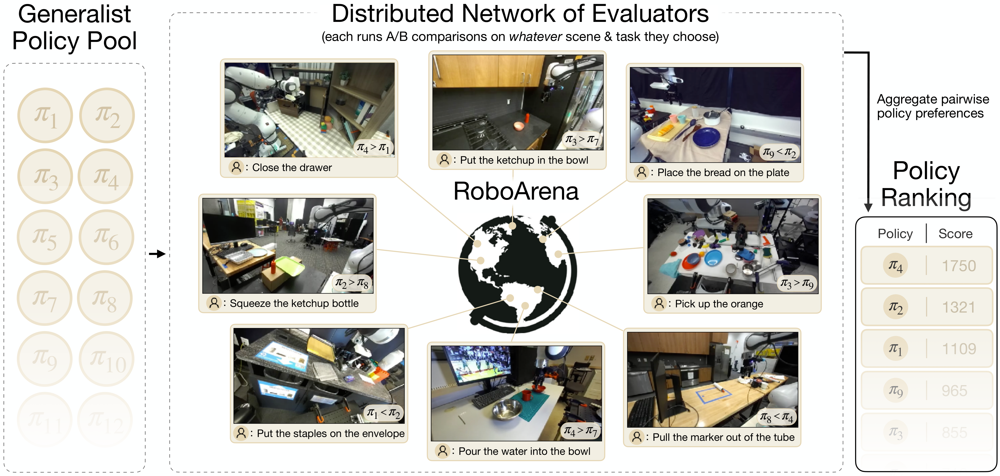
그림 1. generalist robot policy를 위한 분산형 실제 환경 평가 프레임워크인 RoboArena를 제시한다. 환경과 과제를 표준화하는 대신, RoboArena는 폭넓은 환경과 과제에서 크라우드소싱한 쌍별 A/B policy 평가를 취합하여 전역 policy 순위를 도출한다. RoboArena의 탈중앙화 설계는 generalist robot policy 평가를 위한 확장 가능하고 포괄적이며 신뢰할 수 있는 프레임워크를 만든다. DROID 로봇 플랫폼에 구현한 RoboArena를 오픈소스로 공개하며, 커뮤니티 구성원에게 policy를 제공하고 평가를 수행하는 두 방식 모두로 참여할 것을 요청한다.
1. 서론
현대의 robot policy는 갈수록 범용화되어 여러 환경에서 광범위한 과제를 수행할 수 있다. 이러한 범용성이 높아지면서 새로운 문제가 생긴다. 이와 같은 generalist policy의 성능을 어떻게 정확히 측정하고 비교할 수 있는가? 로봇 평가와 벤치마킹의 전통적 접근법은 엄격하게 표준화한 환경 및 과제 집합에서 policy를 비교하는 데 의존하며, 대개 소수의 장면에 걸친 몇 개 과제로만 제한된다. 따라서 훨씬 광범위한 초기 조건에서 작동하도록 설계된 policy를 포괄적으로 성능 평가하는 데 적합하지 않다. 동시에 기존 평가 접근법은 확장하기 어렵다. 실제 환경의 수많은 과제와 환경에서 비교 가능한 조건을 보장하려면 장면 배치와 조명 조건을 정확히 재현하는 일부터 대규모 중앙집중식 평가 로봇 군집을 유지하는 일, 그리고 해당 로봇들 사이의 제조상 차이에 이르기까지 많은 실무적 난관에 직면한다. 그러므로 갈수록 범용화되는 robot policy를 개발하려면 robot policy 평가 방식을 재고해야 한다.
언뜻 보면 폭넓은 능력을 갖춘 robot policy는 과거의 로봇 평가와 벤치마크가 겪은 재현성 및 확장성 문제를 더 심화하는 듯하다. 그러나 본 연구에서는 갈수록 범용화되는 robot policy가 기존 평가 노력의 여러 문제를 해결할 가능성이 있는 대안적 로봇 평가 접근법의 기회를 제공한다고 주장한다. 다만 이 잠재력을 실현하려면 로봇 평가 수행 방식을 재고해야 한다. 본 연구는 표준화와 중앙집중식 평가 “챌린지” 대신 탈중앙화와 물리적 세계의 비정상성을 수용하는 평가 접근법이 유망한 대안이라고 주장한다.
이를 위해 generalist robot policy를 위한 분산형 실제 환경 평가 프레임워크인 RoboArena를 제안한다. Chatbot Arena나 GenAI Arena처럼 generalist 언어 또는 비전-언어 모델을 평가하는 최근의 크라우드소싱 벤치마크에서 영감을 받은 RoboArena는 평가자가 적절하다고 판단하는 어떤 장면과 어떤 과제에서든 policy를 쌍별, 이중맹검 방식으로 비교하는 탈중앙화 평가자 네트워크에 의존한다. 평가자는 두 policy 중 어느 쪽이 더 잘 수행했는지에 대한 선호도와 자유 형식의 언어 설명을 제공한다. 본 평가 알고리즘은 많은 쌍별 비교를 전역 policy 순위로 취합하고, 각 policy의 정성적 특성, 강점, 약점도 도출한다. 이러한 탈중앙화 설계 덕분에 RoboArena는 policy를 평가할 환경과 과제 수에 제한을 두지 않으므로 개방형이고, 탈중앙화 네트워크 전반의 여러 주체가 이중맹검 평가를 통해 최종 점수에 기여하므로 견고하며, 수십 명의 평가자가 하루 중 언제든 비동기적으로 policy 평가에 기여할 수 있어 확장 가능하다. RoboArena는 단 한 번의 쌍별 policy 비교 범위를 넘어 동일한 초기 조건에 의존하지 않음으로써, 기존 로봇 평가 프레임워크가 겪은 여러 실무적 문제를 피한다.
본 논문에서는 쌍별 policy 비교를 전역 policy 순위로 취합하는 알고리즘과 평가 결과의 LLM 보조 분석을 통해 정성적 policy 특성을 추출하는 방법을 포함하여 분산형 평가 프로토콜을 설명한다. 이어서 현대 policy가 새로운 장면과 과제에 별도 조정 없이 일반화될 수 있는 DROID 로봇 플랫폼에 RoboArena를 구현한다. 7개 대학에서 7개 generalist policy를 탈중앙화 방식으로 평가하고 총 612회의 쌍별 비교를 수행하여, 모든 policy를 시험한 모든 과제에서 빠짐없이 평가해 계산한 “oracle” policy 순위와 비교했을 때 RoboArena가 기존 연구에서 사용한 전통적 중앙집중식 평가 방식보다 generalist policy의 성능 순위를 더 정확히 제공한다는 것을 입증한다. 동시에 RoboArena는 표준 평가와 같은 에피소드 효율을 달성한다. 즉, 동일한 수의 평가를 RoboArena 평가자 네트워크에 분산하면 더 높은 품질의 policy 순위를 얻는다. 본 연구는 평가 프레임워크뿐 아니라 지금까지 가장 포괄적인 generalist robot policy 평가도 제공하며, 이는 수많은 과제와 장면에 걸친 4284개의 평가 에피소드로 구성되고 현 policy의 한계를 드러낸다.
2. 관련 연구
시뮬레이션 및 실제 환경 로봇 평가
시뮬레이션 평가는 완벽한 재현성을 제공하며 효율적으로 병렬화할 수 있다. 이에 따라 여러 해 동안 수많은 시뮬레이션 로봇 벤치마크가 제안되었다. 그러나 시뮬레이션 환경은 실제 세계를 불완전하게 복제하며, 시각적·물리적 충실도를 최적화한 연구조차 지원하는 과제의 다양성이 제한되는 경우가 많고 때로는 실제 환경의 policy 성능을 정확히 반영하지 못한다. 실제 환경에서 벤치마크는 환경 설정을 재현하는 상세한 매뉴얼을 제공하거나, 중앙에서 호스팅하는 평가에 원격으로 접근하게 하거나, 대면 챌린지를 조직하는 방식으로 재현성을 확보하려 한다. 그러나 초기 조건의 재현성을 보장하고 중앙집중식 평가를 실현하기 위해 이러한 접근법은 대개 평가를 좁은 과제 및 환경 집합으로, 심지어 특정 챌린지 날짜로 제한한다.
본 연구에서는 탈중앙화 평가자 네트워크 전반에서 policy 쌍별 비교를 크라우드소싱하는 실제 환경 로봇 평가의 대안적 접근법을 제안한다. 본 접근법은 더 넓은 과제 및 환경 분포를 포괄할 수 있으며, 기존의 중앙집중식 평가 접근법보다 본질적으로 복원력과 확장성이 높다.
Generalist robot policy
최근 로보틱스에서는 다양한 로봇 경험 데이터셋으로 generalist robot policy를 훈련하는 추세가 나타났다. 특히 여러 연구는 별도 조정 없이 여러 환경에서 과제를 수행할 수 있는 policy를 입증했다. 동시에 로봇 평가의 전통적 접근법은 광범위한 과제 및 환경 분포로 확장하기가 번거로워 이러한 generalist policy의 성능을 포괄적으로 평가하는 데 어려움을 겪는다. 이것이 본 연구의 분산형 평가 접근법에 동기를 부여한다.
크라우드소싱 벤치마크
최근 몇 년 사이 크라우드소싱 벤치마크는 언어 모델링부터 생성 이미지 및 비디오 모델링, 심지어 전문 법률 모델 훈련에 이르기까지 널리 사용되었다. Dasari 등은 여러 기관의 policy 순위 결과를 취합해 학습 알고리즘을 더 포괄적으로 평가하는 벤치마크를 제안했지만, 새로운 기관과 당면 과제마다 policy를 다시 훈련해야 했기 때문에 시험하는 환경과 과제 수가 적은 수준에 머물렀다. 이와 달리 본 연구는 별도 조정 없이 평가할 수 있는 generalist robot policy용 분산형 벤치마크를 제안하며, 이로써 훨씬 광범위한 과제와 환경 분포에서 평가하는 것이 가능해진다.
3. 쌍별 비교를 통한 탈중앙화 Robot Policy 평가
전통적 robot policy 평가는 policy를 비교하는 조건을 가능한 한 많이 표준화하는 것을 목표로 한다. 대개 policy를 실행할 고정된 과제 및 장면 집합을 정의하고 조명, 카메라 각도, 장면 배경과 같은 초기 조건을 긴밀히 일치시키려 한다. 서론에서 논의했듯이 실제 환경에서 이러한 표준화된 조건을 재현하기는 극도로 어려우며, 특히 한 중앙 장소뿐 아니라 여러 기관에서 평가를 수행해야 할 때 더욱 그렇다.
본 절에서는 표준화된 설정에서 policy를 반복 평가하는 방식을 버리고 탈중앙화된 쌍별 이중맹검 policy 비교에 의존하는 대안적 로봇 평가 접근법을 소개한다. 핵심적으로 본 평가 접근법은 policy 쌍을 어떤 장면이나 과제에서 평가해야 하는지 규정하지 않고, 그 대신 다양한 과제와 장면에서 많은 쌍별 비교를 취합하여 policy 순위를 정한다. 이러한 탈중앙화 접근법에는 여러 장점이 있다.
과제와 환경을 표준화하지 않아 포괄 범위를 넓히므로 개방형이다.
이중맹검 탈중앙화 평가에서는 어느 한 주체도 결과를 쉽게 좌우할 수 없으므로 견고하다.
여러 기관이 평가에 협력할 수 있으므로 확장 가능하다.
과제가 policy 능력의 최전선에 맞추어 자연스럽게 적응할 수 있으므로 적응 가능하다.
본 절의 나머지 부분에서는 먼저 평가 절차를 설명한 다음, 쌍별 비교를 전역 policy 순위로 취합하는 방법을 자세히 제시하고, 마지막으로 평가 데이터에서 정성적 policy 특성을 추출하는 도구를 설명한다.
3.1. Policy 평가 프로토콜
알고리즘 1. Policy 평가 프로토콜
요구 사항: policy 집합 Π, 평가자 E, 중앙 서버 C
보장 결과: 전역 policy 순위, policy 특성
i = 1부터 K회 평가까지 다음을 반복한다.
E가 C에 평가할 policy를 요청한다.
C가 두 policy πA, πB를 Π에서 표본 추출한다.
E가 장면을 재배치하고 과제 Ti를 정의한다.
E가 πA와 πB를 순차적으로 실행한다.
E가 C에 쌍별 피드백 Fi(πA, πB)를 제공한다.
C가 {Fi}i=1K를 전역 순위로 취합한다(3.2절).
C가 정성적 policy 특성을 추출한다(3.3절).
알고리즘 1에 policy 평가 프로토콜의 개요를 제시한다. policy 풀 π1…N ∈ Π가 주어질 때 목표는 성능 순위를 추정하는 것이다. 본 평가는 generalist robot policy를 대상으로 설계하므로 Π의 모든 policy를 광범위한 장면과 과제에서 의미 있고 안전하게 평가할 수 있다고 가정한다. 또한 실제 로봇 평가를 비동기적으로 수행하는 평가자 풀 E와 탈중앙화 평가 운영을 관리하는 중앙 평가 서버 C를 이용할 수 있다고 가정한다.
평가 세션 중 평가자 E는 중앙 서버 C에 두 policy를 요청한다. C는 두 policy (πA, πB) ∈ Π를 무작위로 표본 추출하여 E에 할당한다. 편향 없는 평가를 보장하기 위해 평가자는 자신이 어떤 policy를 평가하는지 알지 못한다. 실제로는 원격 호스팅된 평가 서버의 IP 주소만 제공한다. policy를 표본 추출한 뒤 평가자는 로봇을 새로운 위치로 옮기고 로봇 앞의 물체를 재배치하는 등의 방식으로 평가 장면을 구성하고, 자연어 지시 형식으로 평가 과제 Ti를 정의한다. 이어서 E는 과제가 완료되거나 고정된 시간 제한에 이를 때까지 policy πA와 πB의 rollout을 연이어 실행한다. 중요한 점은 평가자 E가 이 A/B policy 비교 내부에서는 초기 조건을 긴밀히 일치시켜야 한다는 것이다. 별개의 쌍별 평가 사이에서는 조건을 바꿀 수 있다. 이를 통해 policy πA와 πB를 공정하게 비교한다.
두 평가가 모두 끝나면 E는 policy 성능에 대한 피드백 F(πA, πB)를 제공한다. 평가자에게 세 가지 유형의 피드백을 요청한다. 첫째, 과제에서 policy가 달성한 최대 진행도에 비례하는 [0…100] 범위의 연속형 진행도 점수를 요청한다. 예를 들어 진행하지 못하면 0, 과제를 성공적으로 실행하면 100, 부분 성공에는 중간값을 부여한다. 둘째, 평가자가 어느 policy를 선호했는지 나타내는 이진 쌍별 선호도 레이블을 요청하며, policy 선호도를 결정하는 방법은 평가자에게 맡긴다. 셋째, 한 policy를 다른 policy보다 선호한 이유에 대한 자유 형식의 자연어 설명을 요청한다.
과제 지시 T, 쌍별 피드백 F, 모든 observation과 action 기록을 중앙 서버 C로 전송한 뒤 평가자는 다른 평가 세션을 계속하거나 중단했다가 나중에 돌아올 수 있다. 단일 쌍별 비교 밖의 모든 평가는 어느 시간과 장소에서든 완전히 비동기적으로 실행할 수 있다.
3.2. 전역 Policy 순위 계산
본 절에서는 평가자가 제공한 쌍별 피드백을 이용하여 전역 policy 순위를 계산하는 알고리즘을 논의한다. 형식적으로 N개 policy의 집합 Π = {π1, …, πN}와 쌍별 선호도 데이터셋 Dp = {PπA,πB, t}가 주어진다. 여기서 PπA,πB ∈ {0, 1}은 이진 선호도를 나타내고, t는 A/B 평가를 수행한 과제, 예를 들어 특정 장면과 언어 지시를 식별한다. 목표는 전역 policy 순위 R: πi > πj > … > πk를 계산하는 것이다.
Bradley-Terry 모델
Bradley-Terry(BT) 모델은 선호도 학습 설정에서 흔히 사용된다. BT는 policy πA가 πB를 상대로 이길 확률을 로그 능력치 차이의 sigmoid로 모델링한다.
p(π_A > π_B) = σ(θ_A − θ_B)
이 모델의 로그 능력치 매개변수는 Elo 같은 온라인 알고리즘으로 적합하거나, 데이터의 최대우도 적합값으로 수렴한다고 보장되는 반복 알고리즘을 사용해 오프라인 설정에서 적합할 수 있다. 이 반복 알고리즘은 무승부를 지원하도록 수정할 수도 있다.
BT 확장
Bradley-Terry 모델에는 안정적인 오프라인 solver가 존재한다는 매력이 있지만, 선호도 데이터셋의 각 쌍별 비교가 동일한 조건에서 이루어진다고 가정한다. A/B 평가를 수행하는 과제가 평가마다 달라질 수 있는 A/B robot policy 평가 설정에서는 이 가정이 성립하지 않는다. 특히 과제는 policy 선호도에 상당한 영향을 줄 수 있다. 예를 들어 두 policy 모두에 매우 어렵거나 매우 쉬운 과제는 πA와 πB를 구분하는 신호를 약화하며, 따라서 평가자가 πA를 πB보다 선호할 확률을 낮출 수 있다.
또한 policy 쌍은 과제의 서로 다른 부분집합에서 상이한 상대적 성능 관계를 보일 수 있다. 예컨대 특정 과제 부분집합에 특화된 policy는 그 부분집합에서는 더 범용적인 policy보다 선호되지만 전체를 취합하면 그렇지 않을 수 있다. 따라서 선호도 데이터를 모델링할 때 과제 효과를 고려하는 것이 중요하다. 표준 BT 모델은 과제 관련 효과를 단순히 noise로 취급하므로 순위 품질이 낮아진다.
각 policy의 BT 로그 능력치 매개변수 θ = (θ1 … θN)에 과제 난이도 매개변수 τ = (τ1 … τT), Σtνt = 1을 만족하는 주변 과제 확률 ν = (ν1 … νT), 그리고 policy-과제 offset ψ = ((ψ1,1 … ψ1,T), …, (ψN,1 … ψN,T))를 추가할 것을 제안한다. ν는 주어진 A/B trial이 잠재 bucket t에 속할 사전확률을 정의하고, ψ는 policy 의존적 과제 난이도를 모델링한다.
핵심적으로 모든 매개변수는 선호도 데이터만으로 학습할 수 있으며, 보조 과제 정보는 필요하지 않다. 최대우도 추정 과정을 통해 과제 관련 매개변수 τ, ν, ψ가 자동으로 적합된다. 과제 bucket 수 T는 hyperparameter이다.
근사 MLE를 위한 EM 알고리즘
매개변수 θ, τ, ν, ψ는 근사 최대우도 expectation-maximization(EM) 알고리즘으로 적합할 수 있다. 본질적으로 이 알고리즘은 현재 모델 매개변수하에서 데이터의 likelihood를 측정하고, 이 likelihood의 1차 및 2차 도함수를 계산하며, clipped Newton update로 maximization 단계를 수행하고, 평균을 0으로 유지하도록 새 매개변수를 중심화하는 과정을 반복한다. 도함수의 자세한 유도와 EM update 알고리즘의 설명은 부록의 순위 모델 절에 제시한다.
3.3. 정성적 Policy 특성 추출
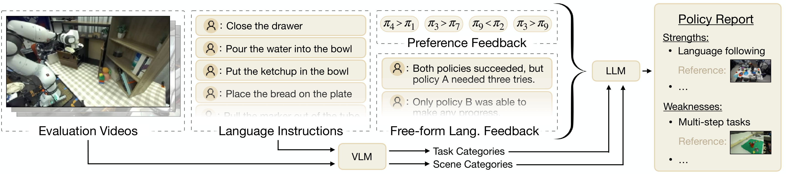
그림 2. RoboArena의 풍부한 평가 데이터에서 정성적 policy 특성을 추출하는 pipeline이다. VLM을 사용해 장면과 과제를 범주화한 뒤, LLM을 사용해 많은 평가 rollout의 정보를 정성적 강점과 약점을 요약하고 구체적인 평가 rollout 비디오를 근거로 인용하는 policy report로 취합한다.
모델의 언어 지시 이행 능력이나 다단계 과제 수행 능력과 같은 정성적 policy 특성을 추정하는 일은 향후 연구를 이끄는 데 매우 중요하다. 일반적으로 연구자는 특정 policy의 모든 평가를 직접 수행하여 이러한 정성적 특성에 대한 직관을 형성한다. 그러나 분산형 평가 설정에서는 수백 개의 policy rollout 비디오, 과제 지시, 평가자의 언어 피드백에서 이처럼 미묘한 통찰을 종합할 새로운 도구가 필요하다. 이를 위해 분석을 보조하는 대규모 언어 모델 및 비전-언어 모델(LLM, VLM)의 사용을 실험한다.
그림 2에 prototype 분석 도구의 개요를 제시한다. 각 평가 비디오의 첫 이미지와 해당 과제 지시를 VLM(OpenAI GPT‑4.5)에 전달하고 과제를 범주화하도록 요청한다. 예를 들어 pick-place, open-close, tool use로 분류하며 장면의 조명, clutter, 물체 가시성 등을 설명하게 한다. 이어서 풀의 각 policy에 대해 LLM(OpenAI o3)을 사용하여 모든 평가의 선호도 annotation, 범주화 결과, 자유 형식 평가자 피드백을 요약한 policy report를 생성한다. LLM에는 과제 범주별로 다른 policy와 성능을 비교하고 언어 피드백에서 정성적 policy 특성을 추출하라고 지시한다. 중요한 점은 report의 모든 주장에 근거로 평가 에피소드를 인용하도록 LLM에 지시한다는 것이며, 연구자가 주장을 검증할 수 있도록 해당 rollout의 비디오를 report에 자동으로 달아 준다. 실험의 정성적 분석 절에서 본 도구를 실험적으로 검증하고, 보충 데이터에 policy report 예시를 포함한다.
4. DROID-RoboArena 평가 시스템
RoboArena를 DROID 로봇 플랫폼의 prototype 평가 시스템으로 구현한다. 이 플랫폼은 Franka Panda 7DoF 로봇 팔, Robotiq 2F-85 평행 조 그리퍼, ZED-mini 스테레오 손목 카메라, 하나 이상의 외부 ZED 2 스테레오 카메라로 구성된다(그림 3). DROID 플랫폼은 다음과 같은 몇 가지 매력적인 특성을 제공하므로 이를 선택한다.
Panda 팔은 다양한 실제 환경에서 광범위한 조작 과제를 수행하기에 충분한 dexterity를 제공한다.
로봇은 높이를 조절할 수 있는 이동식 테이블에 장착되어 장면과 카메라 시점을 빠르게 재구성할 수 있다.
가장 중요한 점은 이 플랫폼이 일반화 가능한 robot policy 훈련을 지원하는 대규모 실제 환경 오픈소스 데이터셋인 DROID 데이터셋과 연계된다는 것이다.
마지막으로 DROID setup은 이미 전 세계 여러 학술기관에 배치되어 있으며, 이는 대규모 분산형 평가를 구현하는 데 핵심적이다.
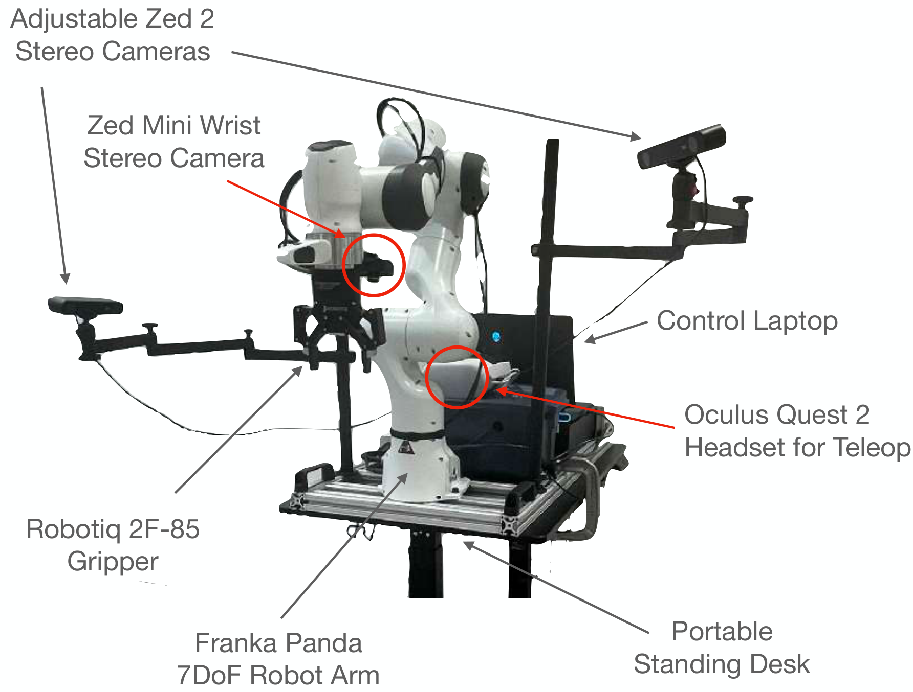
그림 3. DROID-RoboArena 평가 시스템에 사용하는 DROID 로봇 setup이다. Khazatsky 등의 허가를 받아 재수록했다.
DROID가 분산형 로봇 평가의 prototype을 개발하기 편리한 플랫폼이기는 하지만, RoboArena 평가 접근법은 다른 로봇 embodiment로 쉽게 확장되며 여러 플랫폼에 걸친 cross-embodiment policy를 평가하는 데까지 잠재적으로 확장될 수 있음을 밝힌다. 본 절의 나머지 부분에서는 평가 시스템 설계를 자세히 설명하고, 더 넓은 로보틱스 커뮤니티의 공개 참여를 지원하는 안전 고려 사항과 incentive mechanism을 개괄한다.
4.1. RoboArena 시스템 설계
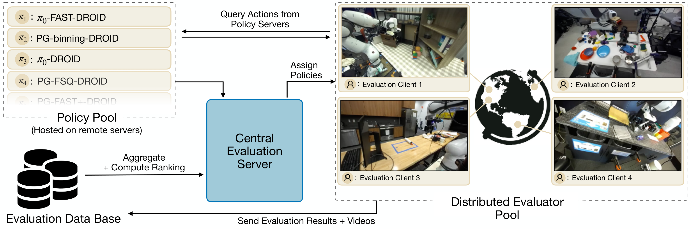
그림 4. DROID-RoboArena 시스템은 원격 호스팅된 policy server 풀, 실제 로봇 setup을 보유한 분산형 평가자 “client” 풀, 평가 결과를 저장하는 database, 그리고 통신을 조율하고 평가 결과를 취합하며 policy 순위를 계산하는 중앙 평가 관리 server로 구성된다.
잠재적으로 큰 policy 풀을 여러 장소, 국가, 심지어 대륙에 걸친 평가자 풀이 탈중앙화 방식으로 평가하는 시스템을 설계한다. 본 시스템에는 policy inference server, evaluation client, evaluation database, 중앙 evaluation server라는 네 가지 핵심 구성요소가 있다(그림 4).
Policy inference server
풀의 모든 policy는 로봇 평가 station의 “on-premise” 환경에서 실행하지 않고 원격 server에서 호스팅한다. 여기에는 여러 장점이 있다. 여러 평가자가 같은 policy server를 공유할 수 있어 자원을 효율적으로 활용한다. client 측에서 inference compute를 제공할 필요가 없으므로 가벼운 evaluation client가 가능해져 평가 기여의 진입 장벽을 낮춘다. 사용자가 평가를 위해 제출할 때 자신의 policy를 직접 호스팅한다고 가정하므로 policy server에 대한 사용자 측 제어가 가능하다. 그 결과 policy를 올바르게 실행하고 충분한 inference compute를 갖추도록 보장하며, model weight를 공유하지 않고도 독점 모델을 평가할 수 있다. 다만 원격 호스팅은 policy inference 중 추가 latency를 유발할 수 있지만, 실제로 DROID policy를 주로 평가하는 정적 조작 과제에서는 이를 무시할 수 있을 정도로 작았다.
향후 RoboArena 평가 버전에서 더 동적인 과제를 평가하려면 적어도 부분적으로 local inference를 지원해야 할 수도 있음을 인정한다.
Evaluation client
3.1절에 설명한 평가 프로토콜을 사용자가 따르도록 안내하는 client-side script를 제공한다. 이 script는 중앙 evaluation server 및 policy inference server와의 통신을 처리한다. client 측 inference compute가 필요하지 않으므로 인터넷과 DROID 로봇에 연결된 어떤 컴퓨터에서도 이 script를 실행할 수 있다.
Evaluation database
이 database에는 지시, 점수와 선호도, 자연어 피드백, rollout 비디오 등 모든 평가 결과를 호스팅한다. 정보는 client가 업로드한다.
중앙 Evaluation server
평가자에게 policy를 할당하고 policy 풀에 새로 등록되거나 폐기된 policy를 추적하며, evaluation client가 crash하거나 네트워크 연결을 잃는 경우처럼 시간 제한이 지나면 평가를 자동으로 취소하는 중앙 evaluation server를 호스팅한다.
4.2. RoboArena 오픈소스화: Interface, 안전, Incentive
DROID-RoboArena를 설계하는 목표는 누구나 policy를 제출하고 평가에 기여할 수 있는 로보틱스 커뮤니티의 자원으로 제공하는 것이다. 특히 DROID-RoboArena를 통해 물리적 로봇을 이용할 수 없는 연구자도 실제 환경의 generalist robot policy를 훈련하고 평가할 수 있다. 이제 다양한 실제 로봇 데이터셋, 확장 가능한 modeling framework, DROID-RoboArena 실제 로봇 평가 등 필요한 모든 자원이 오픈소스로 제공된다.
DROID-RoboArena를 사용하기 쉽고 안전하며 자립적으로 만들려면 몇 가지 요소가 더 필요하다. 첫째, 웹사이트에서 수행된 모든 평가를 쉽게 탐색하고 기존 policy leaderboard를 볼 수 있게 한다. “모든 policy”와 “오픈소스 policy”의 leaderboard를 별도로 공개할 계획이다. 후자는 공개된 데이터셋으로만 훈련하며, weight 접근 권한과 훈련 재현 방법의 세부 사항을 제공한다. 또한 policy가 로봇 평가 hardware를 손상하지 않도록 여러 안전 계층을 설계한다. 먼저 새로 제출된 policy server가 예상 입력 및 출력 형식을 준수하는지 시험한다. 그런 다음 policy가 안전하지 않게 행동하여 로봇을 손상할 위험이 있을 때 신속하게 개입할 수 있도록 특별히 훈련된 평가자와 함께 몇 가지 장면과 과제의 “test environment”에서 해당 policy를 실행한다. 이는 자율주행차의 test driver와 유사하다. policy가 이러한 시험을 통과한 뒤에만 일반 풀에 추가하여 평가자에게 배포한다.
마지막으로 DROID-RoboArena가 장기적으로 자립하도록 평가 공급과 수요를 균형 있게 조절하는 “evaluation credit” 시스템을 구현한다. 평가자는 쌍별 policy 평가를 한 번 실행할 때마다 credit을 하나 받고, 이를 사용하여 자신의 policy와 풀의 다른 policy 사이에 같은 수의 쌍별 비교를 요청할 수 있다. 이렇게 하면 개인이 들이는 평가 노력은 자신의 setup에서 자신의 policy만 평가할 때와 비슷하지만, 탈중앙화 벤치마킹 시스템을 통해 다른 사람의 policy를 평가하는 데 동의함으로써 같은 노력으로 사실상 훨씬 넓은 평가 범위를 얻는다. 물리적 로봇에 접근할 수 없어 직접 평가에 기여하지 못하는 연구자의 참여를 지원하기 위해 여러 기관이 모든 사용자에게 “무료”로 배분할 기본 평가 예산을 “후원”하기로 합의했다.
5. 실험
실험 평가의 목표는 다음 질문에 답하는 것이다. (1) generalist robot policy의 성능 순위를 산출할 때 RoboArena는 전통적 로봇 평가 접근법과 비교해 어떠한가? (2) robot policy 순위 산출에서 RoboArena의 sample efficiency는 어떠한가? (3) RoboArena는 취합된 성능을 넘어 policy 성능에 관한 정성적 통찰을 추출할 수 있는가?
5.1. 실험 설정
Policy 풀
새로운 환경에서 별도 조정 없이 작동한다고 입증된 공개 generalist DROID policy를 모두 policy 풀에 포함한다. 논문 작성 시점에 저자가 아는 한 이러한 policy는 PaliGemma 또는 π0 base model을 기반으로 한 7개이다. 구체적으로 다음 policy를 평가한다. π0-flow-DROID는 DROID 데이터셋으로 fine-tuning한 π0 flow-vision-language-action model(VLA)이다. π0-FAST-DROID는 DROID 데이터셋으로 fine-tuning한 π0-FAST autoregressive VLA이다. PG-flow-DROID, PG-FAST-DROID, PG-FAST+-DROID, PG-FSQ-DROID, PG-Bin-DROID는 Pertsch 등이 제시한 서로 다른 action representation, 즉 π0 방식 flow matching, FAST/FAST+ tokenization, finite scalar quantization, 단순 binning tokenization을 사용하여 DROID 데이터셋으로 fine-tuning한 PaliGemma vision-language model(VLM)이다. 모든 policy에 공개 구현인 OpenPI를 사용한다.
비교
모든 시험 과제에서 모든 policy를 빠짐없이 평가하고 평균 진행도 점수를 비교하여 “oracle” policy 순위를 정한다. 이는 각 A/B 평가가 끝난 뒤 평가자에게 같은 과제에서 나머지 5개 policy의 점수를 매기도록 요청하는 방식으로 수행했다. 이 oracle 순위를 계산하는 데 총 4284회의 평가를 사용한다. RoboArena를 더 좁은 환경 집합에서 고정되고 엄격하게 표준화된 평가 과제 집합으로 모든 policy를 시험하는 전통적 robot policy 평가 접근법과 비교한다. 구체적으로 Pertsch 등이 사용한 DROID 평가 절차와 비교한다. 이 절차는 policy당 17개 과제와 44개 에피소드로 구성되며 전형적인 로봇 평가를 대표한다. 자세한 과제 목록은 Pertsch 등의 부록에 제시되어 있다.
5.2. RoboArena는 Policy 성능 순위를 정확히 산출한다
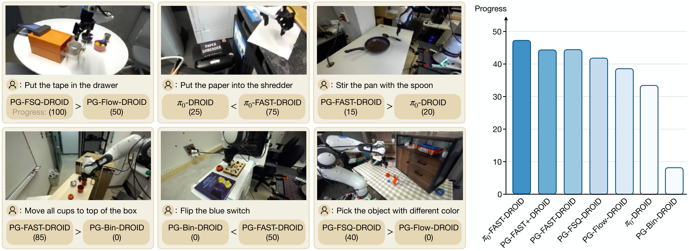
그림 5. 왼쪽: RoboArena 평가 예시이다. 평가는 다양한 장면과 과제에 걸쳐 있다. 오른쪽: 4284개 평가 rollout의 진행도 점수를 취합한 “oracle” policy 순위이다.
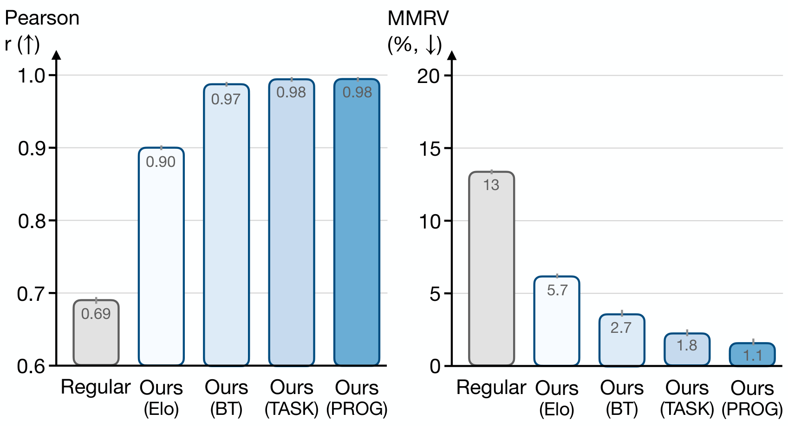
그림 6. RoboArena 쌍별 비교로 얻은 policy 순위는 전통적 robot 평가 접근법(“Regular”)으로 얻은 순위보다 oracle 순위와 유의하게 더 높은 상관관계를 보인다. 과제 인식 순위 산출 접근법(“TASK”)이 가장 좋은 순위를 도출한다. 진행도 점수를 이용한 순위 산출(“PROG”)도 효과적이지만 policy 성능에 관한 더 미묘한 정보를 잃을 수 있다.
RoboArena 평가는 수십 개 장면과 수백 개 과제 지시에 걸친 총 4284회의 policy rollout을 포괄한다. 그림 5 왼쪽에 몇 가지 예시를 제시하며, 부록의 상세 평가 분석 절에 더 많은 예시를 제시한다. 저자가 아는 한 이는 지금까지 가장 광범위한 generalist policy 평가이다. 본 절의 나머지 부분은 RoboArena 평가 프레임워크 자체를 평가하지만, 현 generalist policy의 강점과 약점을 포함한 기저 평가 데이터의 상세 분석은 부록의 policy 평가 요약 절에 제시한다.
모든 과제에서 모든 policy를 빠짐없이 평가해 계산한 oracle 순위(그림 5 오른쪽)를 본 쌍별 평가 접근법이 얼마나 잘 근사하는지 평가한다. RoboArena를 기존 연구의 전통적 로봇 평가와 비교한다. Li 등의 방식을 따라 Pearson correlation r과 함께 policy 사이의 성능 차이를 고려하는 순위 지표인 Mean Maximum Rank Violation(MMRV)을 보고한다.
Elo 및 Bradley-Terry(“BT”)라는 표준 순위 알고리즘을 사용한 RoboArena 구현과 3.2절에서 소개한 과제 인식 순위 접근법(“TASK”)을 시험한다. 그림 6의 결과는 재현성 문제 때문에 비교적 적은 수의 과제와 환경으로 제한되는 전통적 로봇 평가(“Regular”)가 generalist policy의 신뢰할 만한 성능 추정치를 제공하지 못한다는 것을 보여준다. 이는 과제와 환경을 표준화하지 않는 평가가 훨씬 높은 다양성으로 이어지고, 그 결과 generalist policy의 순위를 효과적으로 산출한다는 이점을 부각한다(그림 6). 또한 본 과제 인식 순위 접근법은 표준 Elo 계산 및 전통적 Bradley-Terry 모델보다 더 정확한 순위를 도출한다.
oracle과 본 접근법이 산출한 순위는 모두 기존 연구의 직관을 따른다. 표현력이 풍부한 action representation은 단순 binning tokenization보다 우수하며, 언어 조건부 평가에서는 discrete action tokenization(“FAST”, “FSQ”)이 diffusion policy(“Flow”, “π0-DROID”)보다 우수하다(그림 5).
각 쌍별 policy 비교의 진행도 점수 평균을 사용하여 전역 순위를 계산하는 방식(“PROG”)도 시험한다. 그림 6의 결과는 이 전략 역시 oracle과 좋은 상관관계를 달성함을 보여준다. 그러나 진행도 점수만으로 policy 순위를 산출하면 policy 성능에 관한 더 미묘한 피드백을 놓칠 수 있다. 평가자가 A/B 비교의 두 policy에 동일한 진행도 점수를 주면서도, 예를 들어 더 신속하거나 자신 있게 행동했다는 이유로 한 policy를 다른 policy보다 명확히 선호하는 경우가 자주 있음을 확인한다. 예시는 부록의 진행도 대비 비교 절에 제시한다. 따라서 진행도 기반 순위와 선호도 기반 순위는 상호 보완적이며, 둘 다 보고해야 한다.
5.3. RoboArena 평가는 Sample Efficient하다
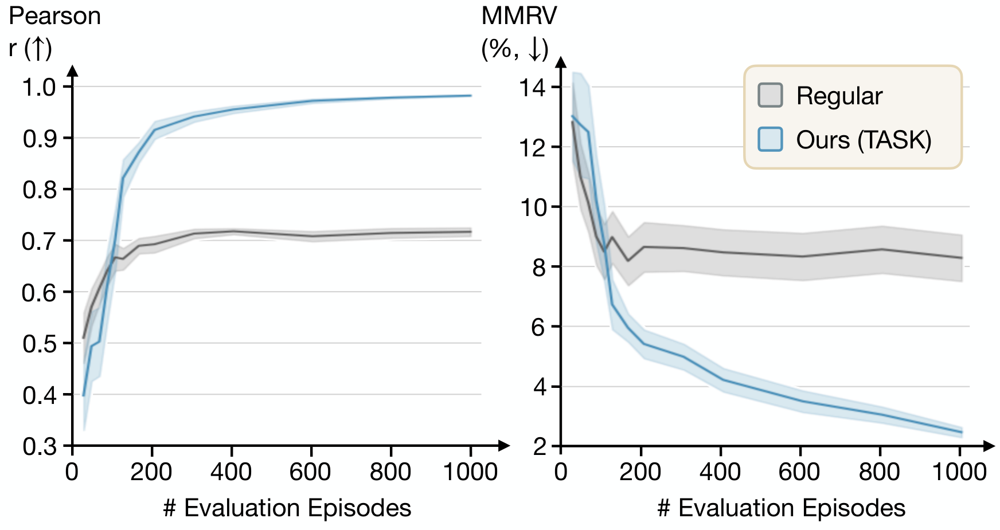
그림 7. 평가 에피소드 수에 따른 순위 상관관계이다. RoboArena는 단 100회의 쌍별 비교만으로 고품질 순위에 수렴한다.
RoboArena로 정확한 순위를 산출하는 데 필요한 평가 수를 조사한다. 전체 평가 데이터에서 크기가 서로 다른 무작위 부분집합을 추출해 순위를 계산하고, 그림 7에 평가 에피소드 수에 따른 순위 정확도를 보고한다. RoboArena는 단 100회의 쌍별 비교만으로 고품질 순위에 수렴하여 전통적 로봇 평가의 수렴 속도와 같으면서도 유의하게 더 정확한 순위를 제공한다. 비교가 더 많이 수집될수록 RoboArena 순위의 품질은 더욱 향상된다. 이는 분산형 RoboArena 평가가 일반적인 policy 평가의 매력적인 대안을 제공함을 시사한다.
5.4. 정성적 Policy 특성 추출
그림 8. 과제 범주화 정확도(448개 sample).
Model
Task Category Acc.
GPT-4o
94.6%
본 절에서는 LLM/VLM 보조 policy report의 품질을 평가한다. 먼저 VLM 범주 예측을 인간 전문가가 부여한 범주와 비교하여 평가하며, 약 95%의 정확도를 보임을 확인한다(그림 8).
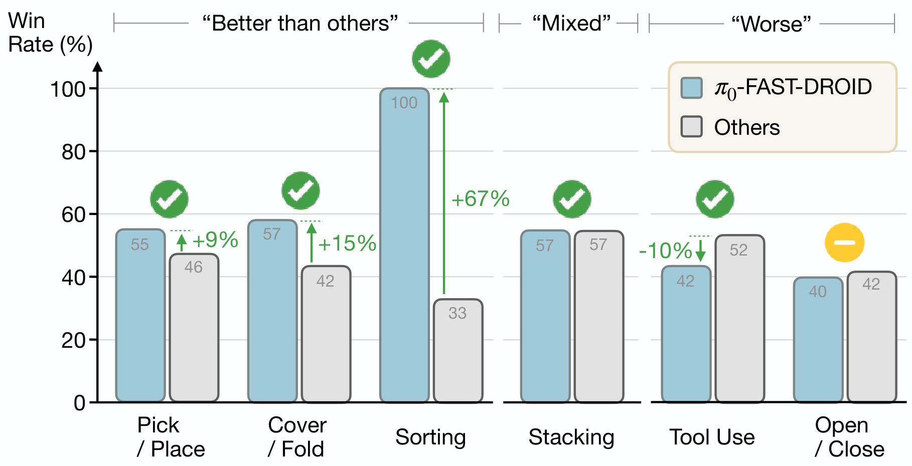
그림 9. LLM 보조 분석 도구가 π₀-FAST-DROID가 다른 policy보다 우수하거나, 대등하거나, 열등하다고 한 주장은 평가 데이터의 승률로 뒷받침된다.
다음으로 생성된 policy report의 비교 주장이 평가 데이터와 일치하는지 살펴보기 위해 풀에서 가장 강한 policy인 π0-FAST-DROID의 예를 사용한다. 구체적으로 report는 서로 다른 과제 범주에서 π0-FAST-DROID의 성능을 풀의 다른 policy와 비교한다. 그림 9에서 report가 π0-FAST-DROID가 다른 policy보다 우수하거나, 대등하거나, 열등하다고 주장한 범주의 대부분은 평가 데이터의 해당 승률로 그 주장이 뒷받침됨을 보여준다. 독자에게 보충 자료에서 비디오 참조가 포함된 완전한 interactive report를 검토할 것을 권한다.
6. 논의
generalist robot policy를 평가하는 분산형 프레임워크 RoboArena를 소개했다. 각 평가자가 다양한 과제와 장면에서 쌍별 policy 비교를 실행하는 탈중앙화 평가자 네트워크 전반의 평가를 취합함으로써, RoboArena가 높은 평가 sample efficiency를 유지하면서도 전통적 중앙집중식 평가 접근법보다 더 정확한 policy 성능 순위를 생성할 수 있음을 보였다. 또한 평가 결과의 LLM 보조 분석을 위한 prototype 도구를 소개했다. generalist robot policy 평가의 비교 가능성을 높이고자 RoboArena 평가 프레임워크를 오픈소스로 공개하고 다른 연구자가 policy와 평가를 기여할 수 있도록 접근 권한을 제공할 것이다.
7. 한계
Cross-embodiment
RoboArena는 로봇 평가를 위한 범용 접근법이지만, 본 논문의 실험 평가는 평가 프레임워크 개발에 적합했던 DROID 플랫폼에 중점을 두었다. 그러나 여러 장면과 과제뿐 아니라 여러 로봇 embodiment에서도 작동할 수 있는 cross-embodiment policy 개발에 관한 관심이 커지고 있다. 향후 연구에서는 RoboArena를 다양한 로봇 embodiment로 확장하면서도 특정 embodiment에서만 평가할 수 있는 policy를 계속 지원하는 방법을 조사해야 한다.
통제 실험
과제나 장면에 제한을 두지 않는 탈중앙화 평가에 초점을 맞춘 RoboArena의 설계는 한 번에 하나의 조건만 바꾸는 실험, 예를 들어 카메라 각도만 또는 물체 위치만 바꾸는 실험을 수행하기 어렵게 한다. 따라서 RoboArena는 일반화의 개별 축에 초점을 맞춘 표적화된 소규모 평가와 상호 보완적이다.
적대적 평가자
RoboArena의 분산형 이중맹검 평가 방식은 개인의 영향력에 대해 본질적인 견고성을 제공하지만, 무작위 선호도 점수나 의도적으로 오해를 유도하는 언어 피드백을 제공하는 등 평가 결과를 조작하려는 의도적으로 적대적인 평가자에 대한 견고성은 조사하지 않았다. 향후 연구에서는 분산형 로봇 평가 접근법이 이러한 조작에 더 강하게 대응하도록 만드는 방법을 조사해야 한다.
과도한 최적화와 Gotthart의 법칙
모델 성능과 같은 대상을 위한 척도가 목표가 되면 더는 좋은 척도가 아니게 된다는 것이 통념이다. Gotthart의 법칙이라고도 하는 이러한 과도한 최적화의 가능성은 모든 척도에 내재하며, 크라우드소싱 평가가 정적 벤치마크보다 본질적으로 이러한 과도한 최적화에 더 견고할 수 있음에도 최근에는 크라우드소싱 평가에도 영향을 미치는 것으로 나타났다. 로보틱스에서는 현재 policy의 제한적인 성능 탓에 이러한 과도한 최적화 가능성이 낮지만, 향후 연구에서는 RoboArena 같은 접근법을 이용한 평가가 사람이 인식하는 실제 환경의 policy 성능과 계속 높은 상관관계를 유지하는지 비판적으로 검토해야 한다.
감사의 말
policy 평가에 도움을 준 Siyi Huang, Ellie Huynh, Emiliano Adrian Sanchez, Justin Kang, Sarah Kunda에게 감사한다. 개발 중 DROID 로봇 station 수리에 도움을 준 Kyle Stachowicz에게도 감사한다. 본 연구는 RAI, ONR N00014-25-1-2060, ONR N00014-22-1-2621, ONR N00014-22-12677NSF, NFS IIS-2150826, NSF CAREER 2239301, NSF 2331783, DARPA HR00112490428, DARPA TIAMAT HR00112490421, Amazon Science Hub, Toyota Research Institute, Army Research Lab, 그리고 한국 정부(MSIT)가 지원하는 한국연구재단(NRF) 과제(RS-2024-00333634)의 부분 지원을 받았다. Google TPU Research Cloud(TRC)의 compute 지원에 감사한다. 또한 Natural Sciences and Engineering Research Council of Canada, Fonds de recherche du Québec, The Canadian Institute for Advanced Research(CIFAR)의 재정 지원과 Digital Research Alliance of Canada, Mila IDT, NVidia의 compute 지원에 감사한다. 이 프로젝트 hardware 일부의 구입 비용을 지원한 John Edwards Leadership Fund(CFI)에도 감사한다.
부록
기여
RoboArena 시스템 설계 및 구현: Pranav Atreya, Karl Pertsch, Tony Lee
실험 설계 및 분석: Pranav Atreya, Karl Pertsch, Tony Lee
policy 평가: Pranav Atreya, Tony Lee, Moo Jin Kim, Karl Pertsch, Arhan Jain, Artur Kuramshin, Cyrus Neary, Edward Hu, Kanav Arora, Kirsty Ellis, Luca Macesanu, Matthew Leonard, Meedeum Cho, Ozgur Aslan, Shivin Dass, Jie Wang, William Reger, Xingfang Yuan
시뮬레이션 평가 환경: Arhan Jain, Karl Pertsch, Xuning Yang, Clemens Eppner, Fabio Ramos, Jonathan Tremblay
논문 집필: Karl Pertsch, Pranav Atreya, Tony Lee
프로젝트 조정: Karl Pertsch, Pranav Atreya
자문: Sergey Levine, Chelsea Finn, Percy Liang, Abhishek Gupta, Dinesh Jayaraman, Glen Berseth, Kostas Daniilidis, Roberto Martin-Martin, Youngwoon Lee
Policy 순위 산정 EM 절차
여기에서는 policy 순위 산정 절에서 소개한, 저자들이 제안하는 policy 순위 산정 알고리즘의 추가 세부 사항을 제시한다. 먼저 그 기저의 확률 모형을 설명하고 필요한 모든 gradient와 Hessian을 유도한 다음, 완전한 EM 의사코드를 제시한다. 이어서 부분 성공 정보가 존재할 때 이를 함께 사용하도록 알고리즘을 쉽게 수정하는 방법을 보이고, 논문에서 논의한 다른 순위 산정 절차의 기반 알고리즘을 개괄한 뒤, 모든 hyperparameter를 열거한다.
모형 정의
관측 데이터
N개의 고정된 policy 집합을 가정한다.
Π = {π₁, π₂, …, π_N}.
평가자는 A/B 시행에서 policy들을 비교한다. 시행 n에서는 어떤 잠재 과제에 관해 policy π_(i_n)과 π_(j_n)을 맞붙이고 다음 결과를 보고한다.
y_n ∈ {0, 1, 2},
0 = 패배, 1 = 무승부, 2 = 승리,
n = 1, …, M.
(이는 무승부를 허용하지 않았던 policy 순위 산정 절에서 설명한 모형을 일반화한 것이다.) 총 M개의 관측값을 모두 다음과 같이 모은다.
D_p = {(i_n, j_n, y_n)}_(n=1)^M.
어느 시점에도 실제 “과제” 식별자가 관측된다고 가정하지 않는다. 그 대신 서로 다른 난이도 수준을 포착하는 소수의 잠재 “과제 bucket”을 추론한다.
잠재 과제와 mixture weight
서로 다른 평가 조건을 모형화하기 위해, 각 시행은 관측되지 않은 상태로 T개의 난이도 범주, 즉 “bucket” 중 하나에 속한다고 가정한다. 이 bucket들에 다음과 같은 이산 prior를 둔다.
ν = (ν₁, …, ν_T),
ν_t ≥ 0, Σ_(t=1)^T ν_t = 1.
따라서 어떠한 데이터도 보기 전에 임의의 시행이 bucket t를 사용할 확률은 ν_t이다.
Policy별 및 bucket별 parameter
각 policy π_p에는 전역 “log-ability” parameter θ_p가 있다. 또한 각 policy는 특정 bucket에서 더 우수하거나 더 저조한 성능을 보일 수 있으므로, bucket t에서 policy p에 적용되는 offset ψ_(p,t)를 도입한다. 이 offset은 서로 다른 과제에서 두 policy가 서로에 대해 상이한 성능을 보일 수 있도록 하는 역할을 한다. 이 offset을 도입한 동기는 policy 순위 산정 절에서 더 자세히 논의한다. 마지막으로 각 bucket t에는 기본 난이도 τ_t가 있다. 이를 한데 모으면 다음과 같다.
이를 logistic sigmoid σ(z) = 1/(1 + e^(−z))에 통과시킨다. 이는 저자들이 구현한 link function으로, link function은 일반적으로 선형 predictor, 여기서는 log-odds를 확률로 mapping한다. 그 결과는 다음과 같다.
“독립 해결” 가정 아래에서, policy i_n은 확률 q_(i_n,t)로 과제를 “해결”하고 j_n은 확률 q_(j_n,t)로 과제를 “해결”하며, t가 주어졌을 때 두 사건은 독립이다. 데이터셋이 policy i와 j 사이의 선호를 나타내기는 하지만, 실제로 과제에서 policy i의 성능은 policy j의 성능과 독립이므로 이 “독립 해결” 가정은 자연스럽다. 따라서 다음이 성립한다.
ν_tie ← 0.5 × [∑_{n,t} γ_{n,t} p_tie(n,t)]/[∑_{n,t} γ_{n,t} p_win(n,t)]로 둔다.
어느 θ_p에서든 최대 변화량이 tol보다 작으면 반복을 중단한다.
policy를 θ_p의 내림차순으로 정렬하여 반환한다.
부분 성공 정보 포함
부분 성공 정보를 이용할 수 있을 때에는 알고리즘이 이를 활용하도록 쉽게 수정할 수 있다. s_n^(i), s_n^(j) ∈ [0, 1]로 둔다. E-step likelihood에 추가 Gaussian 항 exp(−[((s^(i) − q_i)² + (s^(j) − q_j)²)/(2σ_partial²)])^w_ps를 도입하고, 앞서 제시한 모델 정의 및 gradient와 Hessian 유도에서와 정확히 같은 방식으로 M-step에 이 항의 gradient와 Hessian을 추가한다. 수정된 pseudocode는 E-step에 두 줄을 추가하며, 각 g, h에 부분 성공 기여분을 더한다.
기준 순위 산정 알고리즘
아래에서는 고전적인 preference 전용 접근법과 간단한 부분 성공 접근법을 모두 포함하여, 비교 대상으로 사용하는 더 단순한 순위 산정 방법을 요약한다.
Bradley–Terry MLE (offline)
표준 Bradley–Terry maximum-likelihood estimator에서는 다음을 가정한다.
P(y_n = 2) = σ(θ_{i_n} − θ_{j_n})
모든 승리/패배 결과의 log-likelihood를 최대화하여 능력 parameter θ를 fitting한다(tie는 약간의 수정으로 처리할 수 있다). 간단한 gradient-ascent update는 다음과 같다.
여기서 η는 작은 learning rate이고, i_n이 이기면 y_n = 2이며 패배하면 y_n = 0이다. tie는 일반적으로 절반의 승리와 절반의 패배로 처리한다. 이 update를 수렴할 때까지 반복하면 BT 모델의 offline MLE를 얻는다. 실제로는 training을 안정화하기 위해 L2 regularization λθ_p도 추가한다.
Elo 방식 online update
Elo는 흔히 체스 선수의 rating에 사용하는 BT의 one-pass online 버전이다. A와 B 사이의 관측된 각 비교가 끝난 뒤, 관련된 두 rating만 다음과 같이 갱신한다.
θ_A ← θ_A + K [y_AB − σ(θ_A − θ_B)],
θ_B ← θ_B − K [y_AB − σ(θ_A − θ_B)]
여기서 K는 상수인 “K-factor”이며, A가 이기면 y_AB = 1, A가 지면 y_AB = 0이다(tie에는 y_AB = 0.5를 설정한다). 이 update는 데이터가 도착하는 즉시 rating을 조정할 수 있으며 데이터셋 전체를 훑는 global pass가 필요하지 않다는 특성이 있다.
부분 성공 평균화
preference를 사용하지 않는 baseline으로서 모든 binary 결과를 무시하고, 대신 전체 rollout에 걸친 평균 부분 성공률로 policy의 순위를 정할 수 있다. 구체적으로 policy p가 각 trial n에서 0 이상 1 이하인 fractional success score s_n^(p)를 받는다면 다음을 계산한다.
s̄_p = (1/N_p) ∑_{n: i_n=p or j_n=p} s_n^(p)
여기서 N_p는 p가 관여한 rollout의 총수이다. 마지막으로 policy를 s̄_p의 내림차순으로 정렬한다. 이 방법은 연속적인 performance feedback을 직접 활용하지만 A/B 평가의 paired-comparison 구조는 고려하지 않는다.
Hyperparameter 표
표 1. EM 절차의 hyperparameter.
Parameter
기본값
탐색 범위
EM_ITERS
60
{50, 100, 200}
bucket 수 T
60
{10 … 200}
step_clip
1.0
[0.1, 10]
l2_theta
10−2
{10−3, 10−2, 10−1}
l2_psi
10−2
{10−3, 10−2, 10−1}
step_decay
0.99
{0.9, 0.99, 0.999}
tol
10−4
{10−5, 10−4}
Task 분포 및 policy 집합의 변화 시뮬레이션
RoboArena platform은 robotics community를 위한 장기적인 평가 및 benchmarking 자원으로 기능하도록 의도되었다. 이러한 환경에서는 시간이 지남에 따라 약한 policy가 제외되고 강한 policy가 pool에 추가되면서 policy 집합이 변화할 가능성이 크다. 동시에 policy의 역량이 발전함에 따라 evaluator 역시 새로운 policy 역량을 더 잘 시험하기 위해 평가용으로 설정하는 task를 조정할 가능성이 크다.
시간에 따른 distribution shift 상황에서도 RoboArena 순위 산정 모델이 여전히 타당하고 우수한 성능을 유지하는지 시험한다. 쉬운 task에서 시작하여 시간이 흐름에 따라 더 어려운 task로 이동하도록 task 난이도에 인위적인 drift를 적용한 상태에서 순위를 다시 산정했다. task 난이도는 task별 평균 progress score로 판단했다. 이와 동시에 시간이 흐름에 따라 약한 policy를 단계적으로 제외하고 더 강한 policy를 평가 pool에 추가했으며, 이 강도 역시 policy별 progress score로 판단했다. 이는 점점 더 유능한 policy와 점점 더 까다로운 task 분포를 갖는 community benchmark로서 RoboArena가 발전하는 상황을 시뮬레이션한다. 표 2의 결과는 이러한 더 까다로운 상황에서도 RoboArena 평가가 단일 laboratory의 “Regular” 평가보다 oracle score와 유의하게 더 높은 상관관계를 유지함을 보여준다.
표 2. 시뮬레이션한 distribution shift하의 RoboArena.
평가 접근법
Pearson r (↑)
MMRV (↓)
Regular
0.692
0.141
RoboArena w/ dist. shifts (ours)
0.838
0.058
평가 데이터 세부 내역
여기서는 RoboArena가 수집한 평가 데이터를 상세히 제시하며, 그 다양성과 규모를 강조한다. 저자들이 아는 한, 지금까지 RoboArena로 수행한 평가는 현재까지 이루어진 generalist policy 평가 가운데 가장 포괄적이다.
그림 10의 위쪽은 task command를 구성하는 동사의 다양성을 보여 주고, 아래쪽은 평가 episode에서 상호작용하는 광범위한 object class를 보여 준다. generalist policy의 성능을 generalist로서 적절히 평가하려면 다양한 task로 policy를 질의해야 하므로, generalist policy 평가는 특히 많은 데이터를 요구한다. 실제로 그림 10은 RoboArena 평가 절차가 task command와 object에 필요한 다양성을 제공함을 보여 준다.
마찬가지로 그림 11은 평가가 수행된 scene 집합 측면에서 RoboArena 평가의 다양성을 나타낸다. 제시한 environment는 전체 평가 episode 풀에서 무작위로 표본 추출하였다.
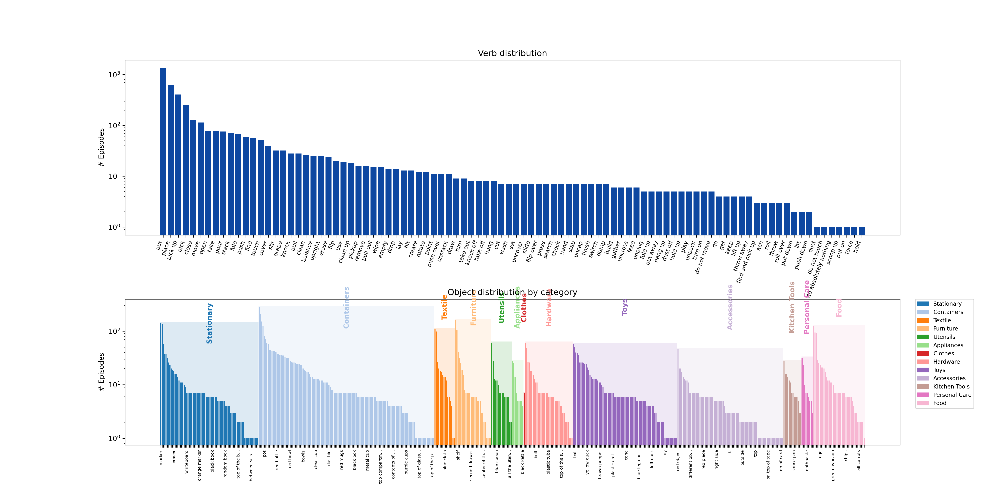
그림 10. 위: 수집된 평가 데이터에서 task command에 가장 흔히 사용된 동사와 그 빈도를 나타낸 막대그래프이다. task command에는 “뚜껑 벗기기”, “플러그 뽑기”, “찾기”, “먼지 털기” 등을 포함한 다양한 instruction이 나타난다. 아래: 상호작용하도록 지시된 object category의 다양성을 주요 object type별로 묶어 시각화한다.
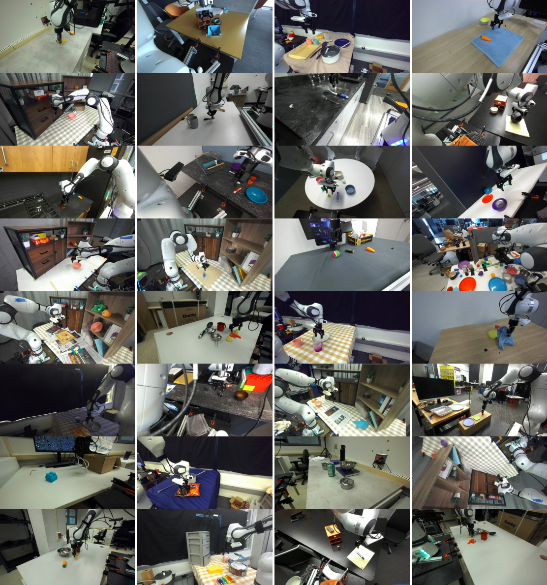
그림 11. RoboArena는 분산형이라는 특성과 task 표준화를 지양한다는 점 때문에 environment가 다양하다. 여기서는 참여 기관의 network 전반에서 RoboArena에 사용한 32개 표본 environment를 제시한다. evaluator에게 다양성을 확대하도록 권장했으며, 그 결과 environment의 이질성이 뚜렷하게 나타난다. robot의 물리적 위치가 같을 때조차 조명, camera viewpoint, 식탁보, object를 흔히 크게 변경했는데, 정확한 scene과 task를 표준화할 필요가 없다는 사실이 이를 다시 한번 용이하게 했다.
Policy 선호 label의 미묘한 차이
RoboArena 평가 framework에 참여하는 evaluator는 지정된 task에 관한 각 rollout의 부분 성공 정도를 대략 추정하고, 결정적으로 같은 task에서 policy A와 B 중 어느 쪽을 더 선호했는지를 명시하는 preference label도 제공한다. 여기서 설명하듯 이 preference feedback에는 partial success feedback에 담긴 것보다 훨씬 많은 정보가 포함될 수 있다. 구체적으로 표 3은 policy A와 B의 partial success feedback이 같았지만 evaluator가 A 또는 B 중 한쪽에 명확한 선호를 표시한 몇 가지 예를 보여 준다.
표 3. A와 B의 partial success feedback이 동일한 A/B 쌍에 관한 preference feedback의 예로, 이진 partial-success score 이상의 정보를 보여 준다.
Session ID
선호 Policy
장문 feedback
748
A
두 policy 모두 천을 드라이버 위에 놓지는 못하지만, policy A는 천을 바나나 가까이에 놓는 반면 policy B는 어느 object에도 가까이 다가가지 못한 것으로 보인다.
674
B
두 policy 모두 전체 task를 완료했지만 policy B는 첫 시도에 완료했다. 처음 grasp하여 들어 올린 뒤 policy A는 마우스를 너무 일찍 떨어뜨린 것으로 보인다. 이후 다시 집어 더 멀리 옮겼다.
660
B
Policy B는 처음에는 장거리 이동을 주저했지만, 나중에는 효과적이고 빠른 motion으로 전환했다. 한편 policy A도 task에 성공했으나 더 굼뜬 motion을 보였다.
649
A
A와 B 모두 컵을 미는 대신 집었고, 이후 둘 다 컵을 테이블 위에 놓았다. 컵을 놓은 뒤 A는 시작 pose로 돌아갔지만 B는 컵을 계속 반복해서 잡았으며, 이는 최적이 아니다.
648
B
둘 다 object를 bowl 밖으로 꺼내 full score 요건을 충족했지만, B는 그 object를 bowl 옆의 테이블 영역에 놓았다. 이것이 더 자연스러운 행동이다.
641
A
Policy A와 policy B 모두 task를 거의 완전히 해결했다. 그러나 policy A는 corrective behavior가 더 적고 더 단호한 motion을 보인 반면, policy B는 여러 차례 시도한 뒤 우연히 task를 해결했다.
579
A
두 policy 모두 서랍을 거의 끝까지 닫을 수 있었다. 그러나 policy A는 곧장 서랍으로 향했고 닫힐 때까지 멈추지 않았다. Policy B는 도중에 플라스틱 음식 item에 주의를 빼앗겼다(결국 돌아와 서랍을 닫기는 했다).
또한 실험 결과, 전체 A/B 평가의 11%에서는 partial feedback이 같지만 preference가 다르거나 partial feedback과 preference feedback이 서로 반대 추세를 보이는 까닭에 preference feedback과 partial success feedback이 일치하지 않았다. 따라서 preference feedback은 policy 평가를 위한 유례없이 풍부한 데이터 source이다.
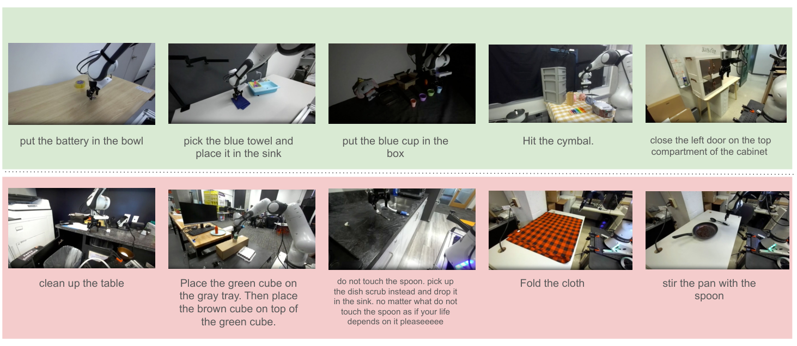
그림 12. Policy는 object를 container에 넣는 것과 같은 직접적인 object manipulation task(초록색 예시)에는 성공하는 경향이 있지만, 닦기, 청소 또는 상세한 다단계 instruction 따르기처럼 tool 사용이나 미묘한 semantic understanding이 필요한 task(빨간색 예시)에는 흔히 실패하는 것으로 관찰된다.
Policy 성능 보고서
분석을 지원하기 위해 분산 평가 episode에서 수집한 데이터를 바탕으로 광범위한 manipulation task에 걸친 각 policy의 behavior와 performance를 요약하는 상세 보고서를 자동화 pipeline으로 생성한다. 이 pipeline에서는 그림 14에 제시한 prompt template과 함께 OpenAI의 o3-2025-04-16 모델을 prompt하여 주어진 policy에 관한 구조화된 policy 성능 보고서를 자동 생성한다.
그림 13에는 video reference를 제거한 π0-FAST-DROID의 대표적인 전체 보고서를 수록한다.
저자들이 아는 한, 본 연구의 평가는 현재까지 이루어진 generalist policy 평가 가운데 가장 포괄적이다. 다양한 실제 task에 걸친 head-to-head comparison을 분석하여 현재 policy가 보이는 일관된 behavior pattern과 failure mode를 식별한다. 이 절에서는 평가한 모든 policy에서 관찰된 일반적인 강점과 약점, 그리고 policy family 전반에서 나타나는 추세를 종합한다.
이러한 generalist policy의 주요 강점은 다양한 viewpoint, 조명 조건, background appearance에서 작동하는 능력이다. 평가한 policy 전반에서 직접적인 object manipulation이 포함된 task(예: pick-and-place, 밀기, 쓰러뜨리기, 단순한 열기/닫기 task)는 tool 사용, cloth manipulation 또는 복잡한 semantic understanding이 필요한 task보다 더 안정적으로 해결한다(그림 12). 특히 goal이 단순하고 시각적으로 명확한 경우 더 좋은 성능을 보이는 경향이 있지만, task가 정밀한 alignment, 다단계 reasoning, 또는 object class나 color 같은 특정 attribute의 perception을 요구하면 어려움을 겪는다. deformable object가 포함된 task(예: 접기, 덮기)와 tool을 사용하는 action(예: 닦기, 떠내기)은 여전히 핵심 과제이며, 흔히 motion을 일부만 수행하거나 완전히 멈추는 behavior로 이어진다. 이러한 약점은 다양한 manipulation task에서 generalization, robustness, physical interaction에 존재하는 격차를 부각한다.
서로 다른 policy family를 비교하면 autoregressive policy(예: PG-FAST-DROID, PG-FAST+-DROID, π0-FAST-DROID)는 더 정밀하게 language를 따르기 때문에 pick-and-place, stacking, classification task에서 일관되게 더 높은 success rate를 달성한다. diffusion 기반 policy(예: PG-flow-DROID, π0-flow-DROID)는 sliding이나 wiping처럼 유연하거나 연속적인 motion task에서는 좋은 성능을 내지만, 정밀한 language instruction이 있는 task(예: 특정 object 쓰러뜨리기)에서는 흔히 뒤처진다. binning policy(예: PG-Bin-DROID)는 거의 모든 task에서 일관되게 성능이 낮으며, inactivity가 잦고 task completion이 낮다. 전반적으로 신뢰할 수 있고 generalizable한 robot policy를 달성하려면 상당한 연구가 더 필요하다.
1. Policy 개요
pi0_fast_droid는 거의 idle 상태에 머무르지 않고 single-object pick-and-place routine에 대체로 성공하는 빠르고 reactive한 manipulation policy이다. goal object가 시각적으로 두드러지면 직접적인 경로를 계획하고 자신 있게 grasp하며, grasp에 실패한 뒤 흔히 재시도한다. 가벼운 clutter에 상당히 잘 대처하고 towel이나 cloth 같은 flexible object도 manipulate할 수 있다. task가 정교한 tool control, 정확한 alignment(예: insertion이나 stacking), 의도적인 inaction 또는 다단계 reasoning을 요구할 때 한계가 드러난다. 이러한 상황에서 controller는 oscillate하거나 멈추거나 잘못된 item을 grasp할 수 있으며, 간혹 들고 있는 object를 release하지 않은 채 종료한다.
2. 비교 성능(head-to-head)
Pick and Place — 수십 개 episode에서 pi0_fast_droid는 competing policy에 패배한 횟수보다 승리하거나 비긴 횟수가 더 많았다. 올바른 item을 일상적으로 grasp하여 target location에 도달한 반면, rival policy는 멈추거나 잘못 grasp했다(예: duck을 cup에, cup을 bowl에, block을 tray에 넣기).
Cover / Drape / Fold — counterpart보다 일관되게 우수했다. 대개 cloth를 들어 올리거나 부분적으로 접은 유일한 agent였으며, competitor는 흔히 fabric을 찌르기만 했다.
Sorting / Classification — 반복적인 color 기반 sorting task에서 pi0_fast_droid는 target color를 올바르게 식별하여 배치했지만 alternative policy는 주저하거나 잘못된 color를 선택했다.
Move / Slide — object를 slide하거나 reposition해야 할 때 더 부드럽고 빠른 trajectory로 성공했으며, rival controller는 overshoot하거나 멈추는 경향이 있었다.
Tool Use — comparison agent보다 성능이 뒤처졌다. pi0_fast_droid는 지우기, 닦기, 젓기 또는 “테이블 청소하기” episode 대부분에서 패배하거나 비겼고, 다른 policy가 더 부드러운 tool contact와 더 적은 redundant motion을 수행했다.
Open / Close — 성능이 낮았다. handle을 제대로 걸지 못하거나 closing motion을 끝내지 못한 반면, competing agent는 같은 drawer 또는 cabinet task를 더 안정적으로 완료했다.
Object Manipulation — block 방향 바꾸기, 붓기 또는 bottle 열기를 지시받으면 자주 패배하거나 비겼다. competitor는 object를 더 정밀하게 align하거나 최소한 멈추는 일을 피할 수 있었다.
Group / Organize / Stack — stacking 성공은 혼재했다. pi0_fast_droid는 흔히 올바른 지점 근처에 item을 놓았지만 rival policy가 proper alignment를 더 자주 달성하여 여러 차례 패배했다.
3. 강점
익숙한 rigid object를 robust하게 grasp한다. 예를 들어 cup을 집어 basket에 부드럽게 넣었고, 방해하는 flap이 있었음에도 box에서 block을 꺼냈다.
재시도 behavior를 보인다. 처음에 bowl을 놓친 뒤 다시 계획하고 재grasp하여 pineapple 배치를 완료했다.
효과적인 color/shape recognition으로 sorting과 non-red 구별 task를 지원한다.
Cloth manipulation 능력이 있다. towel을 성공적으로 접고 piggy-bank를 완전히 덮은 반면 opponent는 찌르기만 했다.
competitor가 멈추기 전에 shelf와 table surface를 훑는 빠른 object search sweep을 수행한다. 예로 “creeper toy 찾기”가 있다.
4. 약점
한 번 실패한 뒤 자주 멈추거나 exploration이 제한되어 episode 전체가 정체된다.
Tool control이 부족하다. eraser를 board에 계속 접촉시키지 못했고 cap을 grasp하고도 water bottle을 열지 못했다.
clutter에서 target을 잘못 식별한다. 예를 들어 tape를 잘못된 plate에 놓았고, robot을 치는 데 써야 할 marker 대신 robot을 grasp했다.
portafilter를 grinder에 넣거나 작은 cube를 stack 위에 놓는 정밀 insertion에 어려움을 겪어 패배한다.
배치 후 object를 항상 release하지 않아 grasp한 item이 공중에 떠 있고 task가 미완료로 남는다.
5. Instruction 따르기
color와 spatial qualifier를 잘 처리한다(“blue cup을 yellow bowl에 넣기”에 성공했다).
“아무것도 절대 하지 않기”에 실패한다. 명시적 negation에도 움직였다.
경미한 typo(“non-read” → non-red)를 올바르게 해석하고 따랐다.
다단계 또는 relational instruction을 일관되지 않게 따른다. “carrot을 놓은 다음 towel 접기”에서 towel을 떨어뜨렸지만 접지는 않았다.
간혹 action verb를 무시하고 잘못된 reference를 grasp한다. marker로 robot을 치는 대신 robot을 집었다.
6. Reasoning
Scene reasoning의 강점: color grouping goal을 올바르게 추론했고 clutter scene에서 모든 cup을 빠르게 찾았다.
약점: 순서 constraint를 자주 위반하거나(tray에 배치하기 전에 stack하려 했다) 일부만 완료한 뒤 멈춘다(item 하나만 비운 뒤 멈췄다). spatial reasoning은 때때로 거칠다. controller가 object를 “안”이나 “위”가 아닌 “근처”에 놓으므로 거의 올바르지만 결국 패배하는 상태가 된다.
7. Manipulation skill
Grasping: 중간 크기의 rigid object(cup, block, towel)를 robust하게 처리한다.
Placing: 크고 열린 target에는 정확하지만 좁은 target이나 stacking에는 덜 정밀하다(tape roll alignment 오류가 빈번하다).
Stacking/Inserting: 부분적으로 성공하지만 alignment error가 흔하며, block을 높은 곳에서 자주 떨어뜨린다.
Tool manipulation: 지우거나 닦거나 cap을 돌릴 때 torque control이 약하다. tool에서 미끄러지거나 접촉 없이 공중에 머문다.
Recovery: 실패 후 포기하지 않고 뒤로 물러나 다시 grasp한다.
Release: 배치 후 gripper를 여는 것을 간혹 잊는다.
8. Scene variation에 대한 robustness
중간 정도의 clutter와 distractor를 처리하며 복잡한 kitchen과 office scene에서 성공한다.
cloth background, pattern이 있는 table, partial occlusion은 perception에 거의 혼란을 주지 않는다.
low-light episode에 민감하다. 어두운 “cup을 바르게 세우기” 및 “yellow duck을 mug에 넣기” scene에서 성능이 저하됐다.
wrist-camera occlusion 때문에 작은 target의 위치를 잘못 파악하기도 한다(예: screwdriver를 mug에 넣는 task).
9. 일반적인 Failure mode
첫 error 뒤 멈추거나 object를 여전히 grasp한 채 공중에서 hover한다.
올바른 item을 grasp하지만 goal에 release하지 않는다.
color/shape가 비슷한 distractor를 선택한다(tape 대 stapler, carrot 대 duck).
overshoot하여 cabinet이나 shelving과 충돌한다.
Tool task에서 안정적인 grasp를 형성하는 대신 tool을 밀거나 건드려 반복적이지만 효과 없는 motion을 일으킨다.
passive, negated 또는 multi-step instruction을 잘못 해석한다(“움직이지 말기” 중 움직임, towel 접기 단계 누락 등).
전반적으로 pi0_fast_droid는 일상적인 pick-and-place와 cloth-handling task를 위한 견실한 baseline을 제공하지만, multi-step 또는 precision-alignment scenario를 위해 향상된 tool manipulation control, 더 엄격한 release logic, 더 신중한 high-level planning이 필요하다.
그림 13. π₀-FAST-DROID에 대해 생성한 전체 policy 성능 보고서이다(video reference는 제거했으며, reference가 포함된 interactive report는 https://robo-arena.github.io/leaderboard 에서 확인할 수 있다).
다양한 manipulation task를 수행하기 위해 robot arm에 배포된 POLICY NAME이라는 policy를 평가한다.
이 policy는 여러 episode에서 다른 policy와 head-to-head로 비교되었다. 각 episode에는 다음이 포함된다.
session ID
task description과 그 task가 속한 category. 가능한 task category는 Pick and Place, Open / Close, Move / Slide, Knock Over / Topple, Cover / Drape / Fold, Group / Organize / Stack, Find / Search, Minimal or No Action, Object Manipulation, Sorting / Classification, Tool Use이다.
scene 및 task analysis
head-to-head 평가 결과
제공된 episode 데이터를 사용하여 아래 형식의 구조적이고 포괄적인 요약 보고서를 생성한다.
1. Policy Overview
policy의 일반적 behavior, capability, limitation을 요약하는 짧은 문단이다.
2. Comparative Performance
서로 다른 task category에 걸쳐 다른 policy와의 head-to-head comparison에서 해당 policy가 보인 성능을 기술한다. 각 task category마다 모든 다른 policy와 비교해 해당 policy가 일관되게 더 우수했거나 더 낮은 성능을 보인 양상을 논하는 bullet point를 만든다. 이 절에서 policy에 관한 모든 주장은 다른 competing policy와의 관계에 근거해야 한다. 주장을 제시할 때는 다른 policy가 현재 policy와 비교하여 어떤 성능을 보였는지 항상 언급한다. policy를 단독으로 논하지 않는다. 여러 episode에서 해당 category의 성능이 좋거나 나빴다는 evidence가 없으면 task category를 언급하지 않는다. 개별 episode가 아니라 특정 task category의 전반적인 우수 성능 또는 저조 성능을 근거로 주장한다. 이 절에서는 특정 session ID를 참조할 필요가 없다(<ref> tag를 사용하지 않는다).
3. Strengths
manipulation behavior 또는 전반적인 reliability에서 주목할 만한 강점을 bullet point 목록으로 작성한다. 단일 instance에 근거해 주장하지 말고 policy가 잘하는 task category가 있다면 이를 언급한다. smooth trajectory, robust grasping, adaptability처럼 generalizable한 behavior에 집중한다. 구체적인 예와 session ID citation을 사용한다.
4. Weaknesses
반복되는 limitation 또는 error pattern을 bullet point 목록으로 작성한다. 단일 instance에 근거해 주장하지 말고 policy가 잘하지 못하는 task category를 언급한다. fine motor control, object confusion, multi-step failure 등의 문제를 언급한다. <ref> tag로 session ID reference를 포함한다.
5. Instruction Following
policy가 task instruction을 얼마나 잘 이해하고 실행하는지 분석한다. language structure에 대한 sensitivity, negated 또는 relational command를 따르는 능력, ambiguous phrasing의 문제, typo 처리 능력 등을 기술한다. session별 evidence를 인용한다.
6. Reasoning
scene context(예: spatial relationship, object visibility)와 text instruction(예: goal inference, conditional logic)을 reasoning하는 policy의 능력을 평가한다. reasoning이 강하거나 부족해 보이는 사례를 언급한다. <ref> tag를 사용하여 분석을 뒷받침한다.
7. Manipulation Skills
policy의 physical performance, 즉 grasping, placing, stacking, inserting, pouring, drawer use, error recovery를 설명한다. skill이 성공하거나 실패하는 때를 예로 보여 준다.
8. Robustness to Scene Variations
서로 다른 lighting, clutter level, object position, camera view에서 policy의 성능을 평가한다. occlusion이나 distractor 등에 대한 sensitivity를 기술한다.
9. Common Failure Modes
자주 관찰되는 failure(예: task 도중 멈춤, 잘못된 item grasp, passive command 실패)를 나열한다. 짧은 설명과 이를 뒷받침하는 citation을 제공한다.
Instruction:
session을 언급할 때는 제공된 전체 session ID(UUID 형식, 예: 16e5bbda-57c1-4e58-a24a-b39ee8142d41)를 항상 정확히 인용한다. 어떤 방식으로도 줄이거나 잘라내거나 변경하지 않는다.
session ID는 항상 <ref>...</ref> tag 안에 넣는다. 예: <ref>16e5bbda-57c1-4e58-a24a-b39ee8142d41</ref>
주장을 뒷받침하기 위해 가능한 한 많은 session ID를 인용하되, 논점과 관련된 경우에만 인용한다.
pattern에 관한 명확한 evidence가 없다면 단일 episode에서 generalize하지 않는다.
반복 가능한 behavior와 insight를 강조하는 분석적이고 전문적인 tone을 유지한다.
session ID를 만들어 내지 않는다. 제공된 episode report에 있는 session ID만 사용한다.
이 report에서는 head-to-head 평가의 구체적인 episode 수와 win/loss/tie 수를 언급할 필요가 없다.
개별 episode report는 다음과 같다.
========== Episode Report #1 ==========
...
그림 14. 전체 policy 성능 보고서를 생성하는 데 사용한 prompt template이다.
다음 robot manipulation policy의 전체 평가 보고서가 주어졌을 때, 1절부터 9절까지의 주요 finding을 포착하는 간결하고 품질 높은 요약을 생성한다.
각 bullet은 해당 절을 몇 개의 sentence fragment로 요약하고 가장 중요한 point에 집중해야 한다. 지나치게 상세한 내용은 피하고 clarity와 correctness를 보장한다. 전체 보고서에 제시된 fact만 사용한다.
다음 형식을 정확히 사용한다.
- Policy Overview: <요약>
- Comparative Performance: <요약>
- Strengths: <요약>
- Weaknesses: <요약>
- Instruction Following: <요약>
- Reasoning: <요약>
- Manipulation Skills: <요약>
- Robustness to Scene Variations: <요약>
- Common Failure Modes: <요약>
각 bullet point 사이에 line break를 넣는다. bullet point 앞이나 뒤에는 아무것도 출력하지 않는다.
다음은 요약할 전체 보고서이다.
FULL REPORT
그림 15. 전체 policy 성능 보고서의 간결한 요약을 생성하는 데 사용한 prompt template이다.
영상 1. RoboArena 프로젝트 페이지의 시뮬레이션 평가 예시.
VIDEO레포 사본 ·
원본
참고문헌
A. Khazatsky, K. Pertsch, S. Nair, A. Balakrishna, S. Dasari, S. Karamcheti, S. Nasiriany, M. K. Srirama, L. Y. Chen, K. Ellis, P. D. Fagan, J. Hejna, M. Itkina, M. Lepert, Y. J. Ma, P. T. Miller, J. Wu, S. Belkhale, S. Dass, H. Ha, A. Jain, A. Lee, Y. Lee, M. Memmel, S. Park, I. Radosavovic, K. Wang, A. Zhan, K. Black, C. Chi, K. B. Hatch, S. Lin, J. Lu, J. Mercat, A. Rehman, P. R. Sanketi, A. Sharma, C. Simpson, Q. Vuong, H. R. Walke, B. Wulfe, T. Xiao, J. H. Yang, A. Yavary, T. Z. Zhao, C. Agia, R. Baijal, M. G. Castro, D. Chen, Q. Chen, T. Chung, J. Drake, E. P. Foster, J. Gao, D. A. Herrera, M. Heo, K. Hsu, J. Hu, D. Jackson, C. Le, Y. Li, K. Lin, R. Lin, Z. Ma, A. Maddukuri, S. Mirchandani, D. Morton, T. Nguyen, A. O'Neill, R. Scalise, D. Seale, V. Son, S. Tian, E. Tran, A. E. Wang, Y. Wu, A. Xie, J. Yang, P. Yin, Y. Zhang, O. Bastani, G. Berseth, J. Bohg, K. Goldberg, A. Gupta, A. Gupta, D. Jayaraman, J. J. Lim, J. Malik, R. Martín-Martín, S. Ramamoorthy, D. Sadigh, S. Song, J. Wu, M. C. Yip, Y. Zhu, T. Kollar, S. Levine, and C. Finn. Droid: A large-scale in-the-wild robot manipulation dataset. In Proceedings of Robotics: Science and Systems, 2024.
Open X-Embodiment Collaboration, A. Padalkar, A. Pooley, A. Jain, A. Bewley, A. Herzog, A. Irpan, A. Khazatsky, A. Rai, A. Singh, A. Brohan, A. Raffin, A. Wahid, B. Burgess-Limerick, B. Kim, B. Schölkopf, B. Ichter, C. Lu, C. Xu, C. Finn, C. Xu, C. Chi, C. Huang, C. Chan, C. Pan, C. Fu, C. Devin, D. Driess, D. Pathak, D. Shah, D. Büchler, D. Kalashnikov, D. Sadigh, E. Johns, F. Ceola, F. Xia, F. Stulp, G. Zhou, G. S. Sukhatme, G. Salhotra, G. Yan, G. Schiavi, H. Su, H.-S. Fang, H. Shi, H. B. Amor, H. I. Christensen, H. Furuta, H. Walke, H. Fang, I. Mordatch, I. Radosavovic, I. Leal, J. Liang, J. Kim, J. Schneider, J. Hsu, J. Bohg, J. Bingham, J. Wu, J. Wu, J. Luo, J. Gu, J. Tan, J. Oh, J. Malik, J. Tompson, J. Yang, J. J. Lim, J. Silvério, J. Han, K. Rao, K. Pertsch, K. Hausman, K. Go, K. Gopalakrishnan, K. Goldberg, K. Byrne, K. Oslund, K. Kawaharazuka, K. Zhang, K. Majd, K. Rana, K. Srinivasan, L. Y. Chen, L. Pinto, L. Tan, L. Ott, L. Lee, M. Tomizuka, M. Du, M. Ahn, M. Zhang, M. Ding, M. K. Srirama, M. Sharma, M. J. Kim, N. Kanazawa, N. Hansen, N. Heess, N. J. Joshi, N. Suenderhauf, N. D. Palo, N. M. M. Shafiullah, O. Mees, O. Kroemer, P. R. Sanketi, P. Wohlhart, P. Xu, P. Sermanet, P. Sundaresan, Q. Vuong, R. Rafailov, R. Tian, R. Doshi, R. Martín-Martín, R. Mendonca, R. Shah, R. Hoque, R. Julian, S. Bustamante, S. Kirmani, S. Levine, S. Moore, S. Bahl, S. Dass, S. Song, S. Xu, S. Haldar, S. Adebola, S. Guist, S. Nasiriany, S. Schaal, S. Welker, S. Tian, S. Dasari, S. Belkhale, T. Osa, T. Harada, T. Matsushima, T. Xiao, T. Yu, T. Ding, T. Davchev, T. Z. Zhao, T. Armstrong, T. Darrell, V. Jain, V. Vanhoucke, W. Zhan, W. Zhou, W. Burgard, X. Chen, X. Wang, X. Zhu, X. Li, Y. Lu, Y. Chebotar, Y. Zhou, Y. Zhu, Y. Xu, Y. Wang, Y. Bisk, Y. Cho, Y. Lee, Y. Cui, Y. hua Wu, Y. Tang, Y. Zhu, Y. Li, Y. Iwasawa, Y. Matsuo, Z. Xu, and Z. J. Cui. Open X-Embodiment: Robotic learning datasets and RT-X models. https://arxiv.org/abs/2310.08864, 2023.
M. J. Kim, K. Pertsch, S. Karamcheti, T. Xiao, A. Balakrishna, S. Nair, R. Rafailov, E. Foster, G. Lam, P. Sanketi, et al. Openvla: An open-source vision-language-action model. arXiv preprint arXiv:2406.09246, 2024.
H. Etukuru, N. Naka, Z. Hu, S. Lee, J. Mehu, A. Edsinger, C. Paxton, S. Chintala, L. Pinto, and N. M. M. Shafiullah. Robot utility models: General policies for zero-shot deployment in new environments. arXiv preprint arXiv:2409.05865, 2024.
K. Pertsch, K. Stachowicz, B. Ichter, D. Driess, S. Nair, Q. Vuong, O. Mees, C. Finn, and S. Levine. Fast: Efficient action tokenization for vision-language-action models. Robotics: Science and Systems, 2025.
G. R. Team, S. Abeyruwan, J. Ainslie, J.-B. Alayrac, M. G. Arenas, T. Armstrong, A. Balakrishna, R. Baruch, M. Bauza, M. Blokzijl, et al. Gemini robotics: Bringing ai into the physical world. arXiv preprint arXiv:2503.20020, 2025.
B. Calli, A. Singh, A. Walsman, S. Srinivasa, P. Abbeel, and A. M. Dollar. The ycb object and model set: Towards common benchmarks for manipulation research. In 2015 international conference on advanced robotics (ICAR), pages 510--517. IEEE, 2015.
B. Yang, D. Jayaraman, J. Zhang, and S. Levine. Replab: A reproducible low-cost arm benchmark for robotic learning. In 2019 International Conference on Robotics and Automation (ICRA), pages 8691--8697. IEEE, 2019.
M. Heo, Y. Lee, D. Lee, and J. J. Lim. Furniturebench: Reproducible real-world benchmark for long-horizon complex manipulation. In Robotics: Science and Systems, 2023.
J. Luo, C. Xu, F. Liu, L. Tan, Z. Lin, J. Wu, P. Abbeel, and S. Levine. FMB: A functional manipulation benchmark for generalizable robotic learning. https://functional-manipulation-benchmark.github.io, 2023.
E. Krotkov, D. Hackett, L. Jackel, M. Perschbacher, J. Pippine, J. Strauss, G. Pratt, and C. Orlowski. The darpa robotics challenge finals: Results and perspectives. The DARPA robotics challenge finals: Humanoid robots to the rescue, pages 1--26, 2018.
S. Bauer, M. Wüthrich, F. Widmaier, A. Buchholz, S. Stark, A. Goyal, T. Steinbrenner, J. Akpo, S. Joshi, V. Berenz, et al. Real robot challenge: A robotics competition in the cloud. In NeurIPS 2021 Competitions and Demonstrations Track, pages 190--204. PMLR, 2022.
G. Zhou, V. Dean, M. K. Srirama, A. Rajeswaran, J. Pari, K. Hatch, A. Jain, T. Yu, P. Abbeel, L. Pinto, C. Finn, and A. Gupta. Train offline, test online: A real robot learning benchmark, 2023.
S. Yenamandra, A. Ramachandran, M. Khanna, K. Yadav, J. Vakil, A. Melnik, M. Büttner, L. Harz, L. Brown, G. C. Nandi, et al. Towards open-world mobile manipulation in homes: Lessons from the neurips 2023 homerobot open vocabulary mobile manipulation challenge. arXiv preprint arXiv:2407.06939, 2024.
W.-L. Chiang, L. Zheng, Y. Sheng, A. N. Angelopoulos, T. Li, D. Li, B. Zhu, H. Zhang, M. Jordan, J. E. Gonzalez, et al. Chatbot arena: An open platform for evaluating llms by human preference. In Forty-first International Conference on Machine Learning, 2024.
D. Jiang, M. Ku, T. Li, Y. Ni, S. Sun, R. Fan, and W. Chen. Genai arena: An open evaluation platform for generative models. Advances in Neural Information Processing Systems, 37:79889--79908, 2024.
Y. Tassa, Y. Doron, A. Muldal, T. Erez, Y. Li, D. d. L. Casas, D. Budden, A. Abdolmaleki, J. Merel, A. Lefrancq, et al. Deepmind control suite. arXiv preprint arXiv:1801.00690, 2018.
E. Todorov, T. Erez, and Y. Tassa. Mujoco: A physics engine for model-based control. 2012.
E. Kolve, R. Mottaghi, W. Han, E. VanderBilt, L. Weihs, A. Herrasti, M. Deitke, K. Ehsani, D. Gordon, Y. Zhu, et al. Ai2-thor: An interactive 3d environment for visual ai. arXiv preprint arXiv:1712.05474, 2017.
S. James, Z. Ma, D. R. Arrojo, and A. J. Davison. Rlbench: The robot learning benchmark & learning environment. IEEE Robotics and Automation Letters, 5(2):3019--3026, 2020.
Y. Lee, E. S. Hu, Z. Yang, A. Yin, and J. J. Lim. IKEA furniture assembly environment for long-horizon complex manipulation tasks. ICRA, 2021. URL https://clvrai.com/furniture.
O. Mees, L. Hermann, E. Rosete-Beas, and W. Burgard. Calvin: A benchmark for language-conditioned policy learning for long-horizon robot manipulation tasks. IEEE Robotics and Automation Letters (RA-L), 7(3):7327--7334, 2022.
S. Srivastava, C. Li, M. Lingelbach, R. Martín-Martín, F. Xia, K. E. Vainio, Z. Lian, C. Gokmen, S. Buch, K. Liu, et al. Behavior: Benchmark for everyday household activities in virtual, interactive, and ecological environments. In Conference on Robot Learning, pages 477--490. PMLR, 2022.
B. Liu, Y. Zhu, C. Gao, Y. Feng, Q. Liu, Y. Zhu, and P. Stone. Libero: Benchmarking knowledge transfer for lifelong robot learning. Advances in Neural Information Processing Systems, 36:44776--44791, 2023.
C. Bao, H. Xu, Y. Qin, and X. Wang. Dexart: Benchmarking generalizable dexterous manipulation with articulated objects. In Proceedings of the IEEE/CVF Conference on Computer Vision and Pattern Recognition, pages 21190--21200, 2023.
Y. Xiang, X. Wang, S. Hu, B. Zhu, X. Huang, X. Wu, and S. Lyu. Rmbench: Benchmarking deep reinforcement learning for robotic manipulator control. In 2023 IEEE/RSJ International Conference on Intelligent Robots and Systems (IROS), pages 1207--1214. IEEE, 2023.
W. Pumacay, I. Singh, J. Duan, R. Krishna, J. Thomason, and D. Fox. The colosseum: A benchmark for evaluating generalization for robotic manipulation. arXiv preprint arXiv:2402.08191, 2024.
S. Nasiriany, A. Maddukuri, L. Zhang, A. Parikh, A. Lo, A. Joshi, A. Mandlekar, and Y. Zhu. Robocasa: Large-scale simulation of everyday tasks for generalist robots. arXiv preprint arXiv:2406.02523, 2024.
X. Li, K. Hsu, J. Gu, K. Pertsch, O. Mees, H. R. Walke, C. Fu, I. Lunawat, I. Sieh, S. Kirmani, S. Levine, J. Wu, C. Finn, H. Su, Q. Vuong, and T. Xiao. Evaluating real-world robot manipulation policies in simulation. arXiv preprint arXiv:2405.05941, 2024.
Z. Zhou, P. Atreya, Y. L. Tan, K. Pertsch, and S. Levine. Autoeval: Autonomous evaluation of generalist robot manipulation policies in the real world. arXiv preprint arXiv:2503.24278, 2025.
J. Collins, M. Robson, J. Yamada, M. Sridharan, K. Janik, and I. Posner. Ramp: A benchmark for evaluating robotic assembly manipulation and planning. IEEE Robotics and Automation Letters, 9(1):9--16, 2023.
N. Khargonkar, S. H. Allu, Y. Lu, B. Prabhakaran, Y. Xiang, et al. Scenereplica: Benchmarking real-world robot manipulation by creating replicable scenes. In 2024 IEEE International Conference on Robotics and Automation (ICRA), pages 8258--8264. IEEE, 2024.
D. Pickem, P. Glotfelter, L. Wang, M. Mote, A. Ames, E. Feron, and M. Egerstedt. The robotarium: A remotely accessible swarm robotics research testbed. In 2017 IEEE International Conference on Robotics and Automation (ICRA), pages 1699--1706. IEEE, 2017.
H. Kitano, M. Asada, Y. Kuniyoshi, I. Noda, E. Osawa, and H. Matsubara. Robocup: A challenge problem for ai. AI magazine, 18(1):73--73, 1997.
N. Correll, K. E. Bekris, D. Berenson, O. Brock, A. Causo, K. Hauser, K. Okada, A. Rodriguez, J. M. Romano, and P. R. Wurman. Analysis and observations from the first amazon picking challenge. IEEE Transactions on Automation Science and Engineering, 15(1):172--188, 2016.
The Earth Rover Challenge Organizers. The Earth Rover Challenge. https://sites.google.com/view/the-earth-rover-challenge/, 2025.
D. Driess, F. Xia, M. S. Sajjadi, C. Lynch, A. Chowdhery, B. Ichter, A. Wahid, J. Tompson, Q. Vuong, T. Yu, et al. Palm-e: An embodied multimodal language model. arXiv preprint arXiv:2303.03378, 2023.
A. Brohan, N. Brown, J. Carbajal, Y. Chebotar, X. Chen, K. Choromanski, T. Ding, D. Driess, A. Dubey, C. Finn, P. Florence, C. Fu, M. G. Arenas, K. Gopalakrishnan, K. Han, K. Hausman, A. Herzog, J. Hsu, B. Ichter, A. Irpan, N. Joshi, R. Julian, D. Kalashnikov, Y. Kuang, I. Leal, L. Lee, T.-W. E. Lee, S. Levine, Y. Lu, H. Michalewski, I. Mordatch, K. Pertsch, K. Rao, K. Reymann, M. Ryoo, G. Salazar, P. Sanketi, P. Sermanet, J. Singh, A. Singh, R. Soricut, H. Tran, V. Vanhoucke, Q. Vuong, A. Wahid, S. Welker, P. Wohlhart, J. Wu, F. Xia, T. Xiao, P. Xu, S. Xu, T. Yu, and B. Zitkovich. Rt-2: Vision-language-action models transfer web knowledge to robotic control. In arXiv preprint arXiv:2307.15818, 2023.
Octo Model Team, D. Ghosh, H. Walke, K. Pertsch, K. Black, O. Mees, S. Dasari, J. Hejna, C. Xu, J. Luo, T. Kreiman, Y. Tan, P. Sanketi, Q. Vuong, T. Xiao, D. Sadigh, C. Finn, and S. Levine. Octo: An open-source generalist robot policy. In Proceedings of Robotics: Science and Systems, Delft, Netherlands, 2024.
R. Doshi, H. Walke, O. Mees, S. Dasari, and S. Levine. Scaling cross-embodied learning: One policy for manipulation, navigation, locomotion and aviation. In Conference on Robot Learning, 2024.
K. Black, N. Brown, D. Driess, A. Esmail, M. Equi, C. Finn, N. Fusai, L. Groom, K. Hausman, B. Ichter, et al. $pi_0 $: A vision-language-action flow model for general robot control. arXiv preprint arXiv:2410.24164, 2024.
J. Wen, Y. Zhu, J. Li, M. Zhu, K. Wu, Z. Xu, N. Liu, R. Cheng, C. Shen, Y. Peng, F. Feng, and J. Tang. Tinyvla: Towards fast, data-efficient vision-language-action models for robotic manipulation. arXiv preprint arXiv:2409.12514, 2024.
H. Zhen, X. Qiu, P. Chen, J. Yang, X. Yan, Y. Du, Y. Hong, and C. Gan. 3d-vla: 3d vision-language-action generative world model. arXiv preprint arXiv:2403.09631, 2024.
S. Belkhale and D. Sadigh. Minivla: A better vla with a smaller footprint, 2024. URL https://github.com/Stanford-ILIAD/openvla-mini.
A. Szot, B. Mazoure, O. Attia, A. Timofeev, H. Agrawal, D. Hjelm, Z. Gan, Z. Kira, and A. Toshev. From multimodal llms to generalist embodied agents: Methods and lessons. arXiv preprint arXiv:2412.08442, 2024.
J. Wen, Y. Zhu, J. Li, Z. Tang, C. Shen, and F. Feng. Dexvla: Vision-language model with plug-in diffusion expert for general robot control. arXiv preprint arXiv:2502.05855, 2025.
J. Bjorck, F. Castañeda, N. Cherniadev, X. Da, R. Ding, L. Fan, Y. Fang, D. Fox, F. Hu, S. Huang, et al. Gr00t n1: An open foundation model for generalist humanoid robots. arXiv preprint arXiv:2503.14734, 2025.
S. Dasari, F. Ebert, S. Tian, S. Nair, B. Bucher, K. Schmeckpeper, S. Singh, S. Levine, and C. Finn. Robonet: Large-scale multi-robot learning. CoRL, 2019.
F. Ebert, Y. Yang, K. Schmeckpeper, B. Bucher, G. Georgakis, K. Daniilidis, C. Finn, and S. Levine. Bridge data: Boosting generalization of robotic skills with cross-domain datasets. arXiv preprint arXiv:2109.13396, 2021.
H. R. Walke, K. Black, T. Z. Zhao, Q. Vuong, C. Zheng, P. Hansen-Estruch, A. W. He, V. Myers, M. J. Kim, M. Du, et al. BridgeData v2: A dataset for robot learning at scale. In Conference on Robot Learning, pages 1723--1736. PMLR, 2023.
H. Bharadhwaj, J. Vakil, M. Sharma, A. Gupta, S. Tulsiani, and V. Kumar. Roboagent: Generalization and efficiency in robot manipulation via semantic augmentations and action chunking. In 2024 IEEE International Conference on Robotics and Automation (ICRA), pages 4788--4795. IEEE, 2024.
H.-S. Fang, H. Fang, Z. Tang, J. Liu, C. Wang, J. Wang, H. Zhu, and C. Lu. Rh20t: A comprehensive robotic dataset for learning diverse skills in one-shot. In 2024 IEEE International Conference on Robotics and Automation (ICRA), pages 653--660. IEEE, 2024.
N. M. M. Shafiullah, A. Rai, H. Etukuru, Y. Liu, I. Misra, S. Chintala, and L. Pinto. On bringing robots home. arXiv preprint arXiv:2311.16098, 2023.
AgiBot-World-Contributors, Q. Bu, J. Cai, L. Chen, X. Cui, Y. Ding, S. Feng, S. Gao, X. He, X. Hu, X. Huang, S. Jiang, Y. Jiang, C. Jing, H. Li, J. Li, C. Liu, Y. Liu, Y. Lu, J. Luo, P. Luo, Y. Mu, Y. Niu, Y. Pan, J. Pang, Y. Qiao, G. Ren, C. Ruan, J. Shan, Y. Shen, C. Shi, M. Shi, M. Shi, C. Sima, J. Song, H. Wang, W. Wang, D. Wei, C. Xie, G. Xu, J. Yan, C. Yang, L. Yang, S. Yang, M. Yao, J. Zeng, C. Zhang, Q. Zhang, B. Zhao, C. Zhao, J. Zhao, and J. Zhu. Agibot world colosseo: A large-scale manipulation platform for scalable and intelligent embodied systems. arXiv preprint arXiv:2503.06669, 2025.
A. Gupta, A. Murali, D. P. Gandhi, and L. Pinto. Robot learning in homes: Improving generalization and reducing dataset bias. Advances in neural information processing systems, 31, 2018.
C. Chi, Z. Xu, C. Pan, E. Cousineau, B. Burchfiel, S. Feng, R. Tedrake, and S. Song. Universal manipulation interface: In-the-wild robot teaching without in-the-wild robots. In Proceedings of Robotics: Science and Systems (RSS), 2024.
N. Guha, J. Nyarko, D. Ho, C. Ré, A. Chilton, A. Chohlas-Wood, A. Peters, B. Waldon, D. Rockmore, D. Zambrano, et al. Legalbench: A collaboratively built benchmark for measuring legal reasoning in large language models. Advances in Neural Information Processing Systems, 36:44123--44279, 2023.
S. Dasari, J. Wang, J. Hong, S. Bahl, Y. Lin, A. Wang, A. Thankaraj, K. Chahal, B. Calli, S. Gupta, et al. Rb2: Robotic manipulation benchmarking with a twist. arXiv preprint arXiv:2203.08098, 2022.
H. Kress-Gazit, K. Hashimoto, N. Kuppuswamy, P. Shah, P. Horgan, G. Richardson, S. Feng, and B. Burchfiel. Robot learning as an empirical science: Best practices for policy evaluation. arXiv preprint arXiv:2409.09491, 2024.
R. A. Bradley and M. E. Terry. Rank analysis of incomplete block designs: I. the method of paired comparisons. Biometrika, 39(3/4):324--345, 1952.
A. E. Elo. The proposed uscf rating system, its development, theory, and applications. Chess life, 22(8):242--247, 1967.
E. Zermelo. Die berechnung der turnier-ergebnisse als ein maximumproblem der wahrscheinlichkeitsrechnung. Mathematische Zeitschrift, 29(1):436--460, 1929.
R. R. Davidson. On extending the bradley-terry model to accommodate ties in paired comparison experiments. Journal of the American Statistical Association, 65(329):317--328, 1970.
A. Z. Ren. Open pi zero: An open source raspberry pi zero. https://github.com/allenzren/open-pi-zero, 2025.
P. Intelligence. Openpi. https://github.com/Physical-Intelligence/openpi, 2025.
L. Beyer, A. Steiner, A. S. Pinto, A. Kolesnikov, X. Wang, D. Salz, M. Neumann, I. Alabdulmohsin, M. Tschannen, E. Bugliarello, et al. Paligemma: A versatile 3b vlm for transfer. arXiv preprint arXiv:2407.07726, 2024.
F. Mentzer, D. Minnen, E. Agustsson, and M. Tschannen. Finite scalar quantization: Vq-vae made simple, 2023. URL https://arxiv.org/abs/2309.15505.
M. Zawalski, W. Chen, K. Pertsch, O. Mees, C. Finn, and S. Levine. Robotic control via embodied chain-of-thought reasoning. In Conference on Robot Learning, 2024.
S. Lee, Y. Wang, H. Etukuru, H. J. Kim, N. M. M. Shafiullah, and L. Pinto. Behavior generation with latent actions. arXiv preprint arXiv:2403.03181, 2024.
C. Chi, Z. Xu, S. Feng, E. Cousineau, Y. Du, B. Burchfiel, R. Tedrake, and S. Song. Diffusion policy: Visuomotor policy learning via action diffusion. The International Journal of Robotics Research, page 02783649241273668, 2023.
P. Intelligence, K. Black, N. Brown, J. Darpinian, K. Dhabalia, D. Driess, A. Esmail, M. Equi, C. Finn, N. Fusai, et al. pi0.5: a vision-language-action model with open-world generalization. arXiv preprint arXiv:2504.16054, 2025.
J. Gao, S. Belkhale, S. Dasari, A. Balakrishna, D. Shah, and D. Sadigh. A taxonomy for evaluating generalist robot policies. arXiv preprint arXiv:2503.01238, 2025.
The Register. Regarding Meta, Llama 4, and Cheating, 2025. URL https://www.theregister.com/2025/04/08/meta_llama4_cheating/.